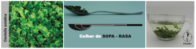

Clique em cada uma das plantas e conheça os seus benefícios.

Aesculus hippocastanum

Aloe vera

Anacardium occidentale

Calendula officinalis

Carapa guianensis

Centella asiatica

Copaifera spp.

Equisetum spp.

Hamamelis virginiana

Lippia origanoides

Matricaria chamomilla

Melaleuca alternifolia

Psidium guajava

Stryphnodendron adstringens

Symphytum officinale
Clique sobre os títulos
Anacardium occidentale
Informações gerais
Informações clínicas
Apresentações, Posologia e Advertências
Referências
VOLTAR AO MENU
INFORMAÇÕES GERAIS
Espécie (Família)
Anacardium occidentale L. (Anacardiaceae)1,2.
Principais nomes populares
Cajueiro1.
Principais sinonímias
Acajuba occidentalis (L.) Gaertn.2.
Partes utilizadas
Entrecasca3,4 de ramos, casca5 de ramos ou folhas jovens6.
Principais constituintes químicos
Compostos fenólicos: taninos; derivados do ácido gálico (galatos de metila e de etila); ácido fenólico
(ácido p-hidroxibenzoico); flavonoides (flavonóis – glicosídios de quercetina e kaempferol;
biflavonoides – derivados de amentoflavona e agatisflavona); alquifenois (ácidos anacárdicos, anacardol
e cardol). E ainda, esteroides e derivados (linoleato de sitosterila, sitosterol, estigmasterol,
3-O-β-D-galactopiranosídeo de sitosterol, 3- O-β-D-glicopiranosídeo de sitosterol); polissacarídeos
(arabinogalactanas) e vitaminas7, 11.

INFORMAÇÕES CLÍNICAS
Principais indicações
Úlceras crônicas.
Outras indicações
Como coadjuvante no tratamento do diabetes mellitus tipo 2 (uso oral), infecções bacterianas em geral,
estomatites da mucosa oral e úlceras cutâneas (uso tópico)4.
Ações farmacológicas
Ensaios clínicos
Não foram encontrados.
Publicações oficiais
APRESENTAÇÕES E POSOLOGIA
* 0,5 g de entrecascas do galho secas fragmentadas corresponde aproximadamente a uma colher de café cheia (Figura 1).
Figura 1. Preparo do decocto de Anacardium occidentale.

Fonte: PEREIRA, A.M.S. et al.; 20204.
Duração do uso
O uso oral contínuo não deve ultrapassar 2 meses3,4. Não foram encontrados dados na
literatura sobre a
duração do tratamento tópico, podendo ser adotada a recomendação fornecida no início do Curso.
Apresentações industrializadas registradas na ANVISA podem ser consultadas no endereço a seguir: https://consultas.anvisa.gov.br/#/medicamentos/.
Advertências
Suspender o uso se houver alguma reação indesejável. O uso oral não é recomendado para crianças,
gestantes e lactantes3,4.
REFERÊNCIAS BIBLIOGRÁFICAS
1. Lorenzi H, Matos FJA. Plantas Medicinais no Brasil: Nativas e Exóticas. Nova Odessa: Instituto Plantarum; 2008.
2. POWO. Plants of the World Online. Facilitated by the Royal Botanic Gardens, Kew. Published on the Internet [Internet]. 2023 [citado 25 de dezembro de 2023]. Disponível em: http://www.plantsoftheworldonline.org/.
3. Pereira AMS, Bertoni BW, Silva CCM, Ferro D, Carmona F, Cestari IM, et al. Formulário Fitoterápico da Farmácia da Natureza. 3a. São Paulo: Bertolucci; 2020. 465 p.
4. Pereira AMS, Bertoni BW, Silva CCM, Ferro D, Carmona F, Tardelli FC, et al. Formulário de Preparação Extemporânea da Farmácia da Natureza. 2a. São Paulo: Bertolucci; 2020. 263 p.
5. Brasil. Formulário de Fitoterápicos da Farmacopeia Brasileira. 2a. Brasília: Agência Nacional de Vigilância Sanitária (ANVISA); 2021. 223 p.
6. Souza NC, de Oliveira JM, Morrone M da S, Albanus RD, Amarante M do SM, Camillo C da S, et al. Antioxidant and Anti-Inflammatory Properties of Anacardium occidentale Leaf Extract. Evidence-Based Complementary and Alternative Medicine. 2017;2017:1–8.
7. Araújo JMD de, Silva AP da, Cândido M de B, Silva TWM da, Andrade Júnior FP de. Estudo etnofarmacológico de Anacardium occidentale: uma breve revisão. Research, Society and Development. 18 de julho de 2020;9(8):e487985802.
8. Adedosu OT, Badmus Jelili A, Akintola Adebola O. Effect of methanolic extract of Anacardium occidentale (Cashew) leaves in carbon tetrachloride induced toxicity in rats and its antioxidant potential. Biomedicine. 2011;31(3):291–5.
9. Borges J. Cashew tree (Anacardium occidentale): Possible applications in dermatology. Clin Dermatol. maio de 2021;39(3):493–5.
10. Duangjan C, Rangsinth P, Zhang S, Wink M, Tencomnao T. Anacardium Occidentale L. Leaf Extracts Protect Against Glutamate/H2O2-Induced Oxidative Toxicity and Induce Neurite Outgrowth: The Involvement of SIRT1/Nrf2 Signaling Pathway and Teneurin 4 Transmembrane Protein. Front Pharmacol. 23 de abril de 2021;12.
11. Da Silva Pereira Rodrigues AR. Potencial antioxidante, antimicrobiano, anti-inflamatória e antifúngica da Anacardium occidentale (Linn): Revisão de literatura. Revista Colombiana de Ciencias Químico-Farmacéuticas. 24 de julho de 2023;52(1).
12. Baptista A, Gonçalves RV, Bressan J, Pelúzio M do CG. Antioxidant and Antimicrobial Activities of Crude Extracts and Fractions of Cashew (Anacardium occidentale L.), Cajui (Anacardium microcarpum), and Pequi (Caryocar brasiliense C.): A Systematic Review. Oxid Med Cell Longev. 2018;2018:1–13.
Clique sobre os títulos
Centella asiatica
Informações gerais
Informações clínicas
Apresentações, Posologia e Advertências
Referências
VOLTAR AO MENU
INFORMAÇÕES GERAIS
Espécie (Família)
Centella asiatica (L.) Urb. (Apiaceae)1, 2.
Principais nomes populares
Centelha, centelha asiática e gotu-kola1.
Principais sinonímias
Hydrocotyle asiatica L.2
Partes utilizadas
Partes aéreas.
Principais constituintes químicos
Triterpenoides entre 1 e 8%, e seus derivados glicosilados (asiaticosídeo e madecassosídeo ou
asiaticosídeo A) e agliconas (ácido asiático e ácido madecássico) são considerados os principais
bioativos, além de flavonoides (quercetina, rutina, apigenina), óleo essencial, compostos
poliacetilênicos (cadinol, acetoxicentelinol, centelina, centelicina e asiaticina), ácidos fenólicos
(ácido rosmarínico, ácido 3,5-di-O-cafeoilquínico, ácido 1,5-di-O-cafeoilquínico, ácido
3,4-di-O-cafeoilquínico, ácido 4,5-di-O-cafeoilquínico)3,4.
INFORMAÇÕES CLÍNICAS
Principais indicações
Insuficiência venosa crônica dos membros inferiores14, 15, adiposites (celulites), úlceras
cutâneas (incluindo venosas), queimaduras, dispepsia e doença péptica5, prevenção da formação
de queloides e cicatrizes hipertróficas, microangiopatia diabética ou hipertensiva venosa, síndrome
pós-flebite4, e transtornos de ansiedade6.
Ações farmacológicas
Ensaios clínicos
Ensaios clínicos e revisões sistemáticas têm comprovado a eficácia de C. asiatica no tratamento
de
distúrbios da microcirculação e insuficiência venosa crônica, úlceras cutâneas, queimaduras,
aterosclerose, e transtorno de déficit de atenção e hiperatividade.
Publicações oficiais
APRESENTAÇÕES E POSOLOGIA
* 0,5 g de folhas secas rasuradas corresponde aproximadamente a uma colher de sopa caseira rasa.
Figura 1. Preparo do infuso de Centella asiatica.

Fonte: PEREIRA, A.M.S. et al.; 202022.
Duração do uso
Não foram encontrados dados na literatura. A duração do tratamento tópico fica a critério do
profissional legalmente habilitado para a prescrição.
Apresentações comerciais
Apresentações industrializadas registradas na ANVISA podem ser consultadas no endereço a seguir: https://consultas.anvisa.gov.br/#/medicamentos/.
Advertências
Contraindicado para gestantes, lactantes e crianças menores de 12 anos e portadores de
epilepsia4. Pode potencializar o efeito de hipoglicemiantes e hipolipemiantes. Em doses
elevadas, pode provocar náuseas, vômitos, irritação gástrica, hipotensão arterial, depressão do sistema
nervoso central, sonolência, sedação, vertigem e cefaleias. Pode causar fotossensibilização cutânea e
dermatite de contato. Evitar em casos de hipercolesterolemia familiar grave, pois pode aumentar os
níveis de colesterol no início do tratamento (descrição de alguns casos)4,24. Em animais foi
descrita infertilidade em fêmeas de camundongos e alterações no esperma de ratos e humanos4.
Nenhuma interação medicamentosa foi encontrada25.
REFERÊNCIAS BIBLIOGRÁFICAS
1. Lorenzi H, Matos FJA. Plantas Medicinais no Brasil: Nativas e Exóticas. Nova Odessa: Instituto Plantarum; 2008.
2. POWO. Plants of the World Online. Facilitated by the Royal Botanic Gardens, Kew. Published on the Internet [Internet]. 2023 [citado 25 de dezembro de 2023]. Disponível em: http://www.plantsoftheworldonline.org/.
3. Gruenwald J, Brendler T, Jaenicke C. Physician’s Desk Reference (PDR) for Herbal Medicines. 4th ed. Connecticut: Thomson; 2007. 1034 p.
4. Saad G de A, Léda PH de O, Sá IM, Seixlack AC de C. Fitoterapia Contemporânea - Tradição e Ciência na Prática Clínica. 3a edição. Rio de Janeiro: Guanabara Koogan; 2021. 1–578 p.
5. WHO. WHO Monographs on selected medicinal plants (Volume 1). 1st ed. Vol. 1. Geneva: World Health Organization; 1999. 289 p.
6. Sarris J. Herbal medicines in the treatment of psychiatric disorders: 10-year updated review. Phytotherapy Research. 2018;32(7):1147–62.
7. Gohil K, Patel J, Gajjar A. Pharmacological review on Centella asiatica: A potential herbal cure-all. Indian J Pharm Sci [Internet]. 2010;72(5):546. Disponível em: http://www.ijpsonline.com/text.asp?2010/72/5/546/78519.
8. Razali NNM, Ng CT, Fong LY. Cardiovascular Protective Effects of Centella asiatica and Its Triterpenes: A Review. Planta Med. 20 de novembro de 2019;85(16):1203–15.
9. Biswas D, Mandal S, Chatterjee Saha S, Tudu CK, Nandy S, Batiha GE, et al. Ethnobotany, phytochemistry, pharmacology, and toxicity of Centella asiatica (L.) Urban: A comprehensive review. Phytotherapy Research. 31 de dezembro de 2021;35(12):6624–54.
10. Cesarone MR, Incandela L, De Sanctis MT, Belcaro G, Bavera P, Bucci M, et al. Evaluation of treatment of diabetic microangiopathy with total triterpenic fraction of Centella asiatica: a clinical prospective randomized trial with a microcirculatory model. Angiology [Internet]. outubro de 2001;52 Suppl 2:S49-54. Disponível em: http://www.ncbi.nlm.nih.gov/pubmed/11666124.
11. Incandela L, Belcaro G, Cesarone MR, De Sanctis MT, Nargi E, Patricelli P, et al. Treatment of diabetic microangiopathy and edema with total triterpenic fraction of Centella asiatica: a prospective, placebo-controlled randomized study. Angiology [Internet]. outubro de 2001;52 Suppl 2:S27-31. Disponível em: http://www.ncbi.nlm.nih.gov/pubmed/11666119.
12. Lou JS, Dimitrova DM, Murchison C, Arnold GC, Belding H, Seifer N, et al. Centella asiatica triterpenes for diabetic neuropathy: a randomized, double-blind, placebo-controlled, pilot clinical study. Esper Dermatol. dezembro de 2018;20(2 Suppl 1).
13. Cesarone MR, Incandela L, De Sanctis MT, Belcaro G, Geroulakos G, Griffin M, et al. Flight microangiopathy in medium- to long-distance flights: prevention of edema and microcirculation alterations with total triterpenic fraction of Centella asiatica. Angiology [Internet]. outubro de 2001;52 Suppl 2:S33-7. Disponível em: http://www.ncbi.nlm.nih.gov/pubmed/11666121.
14. De Sanctis MT, Belcaro G, Incandela L, Cesarone MR, Griffin M, Ippolito E, et al. Treatment of Edema and Increased Capillary Filtration in Venous Hypertension with Total Triterpenic Fraction of Centella asiatica: A Clinical, Prospective, Placebo-Controlled, Randomized, Dose-Ranging Trial. Angiology. 2 de outubro de 2001;52(2_suppl):S55–9.
15. Pointel JP, Boccalon H, Cloarec M, Ledevehat C, Joubert M. Titrated Extract of Centella Asiatica (TECA) in the Treatment of Venous Insufficiency of the Lower Limbs. Angiology. 2 de janeiro de 1987;38(1):46–50.
16. Jenwitheesuk K, Rojsanga P, Chowchuen B, Surakunprapha P. A Prospective Randomized, Controlled, Double-Blind Trial of the Efficacy Using Centella Cream for Scar Improvement. Evidence-Based Complementary and Alternative Medicine. 17 de setembro de 2018;2018:1–9.
17. Arribas-López E, Zand N, Ojo O, Snowden MJ, Kochhar T. A Systematic Review of the Effect of Centella asiatica on Wound Healing. Int J Environ Res Public Health. 10 de março de 2022;19(6):3266.
18. Balevi M, Balevi A. The effect of Centella Asiatica cream on scar development in patients who underwent open carpal tunnel release surgery. Journal of Hand Therapy. outubro de 2023;36(4):962–6.
19. Incandela L, Belcaro G, Nicolaides AN, Cesarone MR, De Sanctis MT, Corsi M, et al. Modification of the echogenicity of femoral plaques after treatment with total triterpenic fraction of Centella asiatica: a prospective, randomized, placebo-controlled trial. Angiology. outubro de 2001;52 Suppl 2:S69-73.
20. Belcaro G, Dugall M, Ippolito E, Hosoi M, Cornelli U, Ledda A, et al. Pycnogenol® and Centella asiatica to prevent asymptomatic atherosclerosis progression in clinical events. Minerva Cardiology and Angiology. novembro de 2016;65(1).
21. Bhatte-Paralkar S, Sule G, Kapadia K, Khandha A, Nandu B, Maddala R. Centella asiatica supplementation in children with attention deficit and hyperactivity disorder (ADHD). Revista Espanola de Nutricion Humana y Dietetica. 2016;20(Supplement 1):508–9.
22. Pereira AMS, Bertoni BW, Silva CCM, Ferro D, Carmona F, Tardelli FC, et al. Formulário de Preparação Extemporânea da Farmácia da Natureza. 2. ed. São Paulo: Bertolucci; 2020. 263 p.
23. Cunha AP. Manual de Plantas Medicinais. Bases Farmacológicas e Clínicas. 1. ed. Portugal: Dinalivro; 2017.
24. Pereira AMS, Bertoni BW, Silva CCM, Ferro D, Carmona F, Cestari IM, et al. Formulário Fitoterápico da Farmácia da Natureza. 3. ed. São Paulo: Bertolucci; 2020. 465 p.
25. Williamsom E, Driver S, Baxter K. Interações Medicamentosas de Stockley: plantas medicinais e medicamentos fitoterápicos. Porto Alegre: Artmed; 2012. 440 p.
Clique sobre os títulos
Calendula officinalis
Informações gerais
Informações clínicas
Apresentações, Posologia e Advertências
Referências
VOLTAR AO MENU
INFORMAÇÕES GERAIS
Espécie (Família)
Calendula officinalis L. (Asteraceae)1,2.
Principais nomes populares
Calêndula, margarida-dourada, mal-me-quer e bem-me-quer1.
Principais sinonímias
Caltha officinalis (L.) Moench2.
Partes utilizadas
Flores.
Principais constituintes químicos
Compostos fenólicos: flavonoides (flavonóis – isoquercitrina, quercetina, narcissina, isorramnetina,
rutina; flavanonas – neo-hesperidosídeo; antocianinas); ácidos fenólicos e taninos. Terpenoides:
triterpenos pentacíclicos (α- e β-amirina, lupeol); triterpenois diol (calenduladiol,
longispinogenina); esteres do triterpendiol (ester do ácido miristico do faradiol e ester do ácido
palmitico do faradiol); saponosideos triterpenicos; fitosteróis; carotenoides; polissacarídeos; e
mucilagens. O óleo essencial é constituído principalmente de mentona, isomentona, cariofileno,
pedunculatina (alcaloide pirrolizidínico) e α e β-ionona3,4.
INFORMAÇÕES CLÍNICAS
Principais indicações
Úlceras agudas e crônicas, dermatites em geral (incluindo eczema e dermatite actínica), dermatite de
fraldas, gengivite e afecções da cavidade oral, acne e queimaduras3,5.
Ações farmacológicas
Ensaios clínicos
Ensaios clínicos e revisões sistemáticas têm demonstrado a eficácia de C. officinalis para o
tratamento
de queimaduras, úlceras cutâneas, mucosite orofaríngea, dermatite de fraldas, dermatite actínica e
vaginose bacteriana.
Publicações oficiais
APRESENTAÇÕES E POSOLOGIA
* 0,5 g de flores secas íntegras corresponde aproximadamente a uma colher de chá caseira cheia (Figura 1).
Figura 1. Preparo do infuso de Calendula officinalis.

Fonte: PEREIRA, A.M.S. et al.; 202016.
Duração do uso
Há poucos dados na literatura sobre a duração do tratamento tópico. Um estudo utilizou C.
officinalis em úlceras por pressão por 30 semanas18. Sugere-se adotar a recomendação
fornecida no início do Curso.
Apresentações comerciais
Apresentações industrializadas registradas na ANVISA podem ser consultadas no endereço a seguir: https://consultas.anvisa.gov.br/#/medicamentos/.
Advertências
Contraindicado em casos de alergias causadas por plantas da família Asteraceae. Em casos raros pode
causar
dermatite de contato, especialmente a planta fresca. O uso interno é contraindicado para gestantes,
lactantes e crianças, e pode causar efeitos espermicida e uterotônico. Não foram encontrados dados na
literatura sobre problemas decorrentes de superdosagem para o uso externo3,5,16,17. Nenhuma
interação medicamentosa foi encontrada19.
Referências bibliográficas
1. Lorenzi H, Matos FJA. Plantas Medicinais no Brasil: Nativas e Exóticas. Nova Odessa: Instituto Plantarum; 2008.
2. POWO. Plants of the World Online. Facilitated by the Royal Botanic Gardens, Kew. Published on the Internet [Internet]. 2023 [citado 25 de dezembro de 2023]. Disponível em: http://www.plantsoftheworldonline.org/.
3. Brasil. Memento Fitoterápico da Farmacopeia Brasileira. 1a ed. Brasília: Agência Nacional de Vigilância Sanitária (ANVISA); 2016. 115 p.
4. Saad G de A, Léda PH de O, Sá IM, Seixlack AC de C. Fitoterapia Contemporânea - Tradição e Ciência na Prática Clínica. 3a edição. Rio de Janeiro: Guanabara Koogan; 2021. 1–578 p.
5. Brasil. Formulário de Fitoterápicos da Farmacopeia Brasileira. 2a. Brasília: Agência Nacional de Vigilância Sanitária (ANVISA); 2021. 223 p.
6. Arora D, Rani A, Sharma A. A review on phytochemistry and ethnopharmacological aspects of genus Calendula. Pharmacogn Rev [Internet]. 2013;7(14):179–87. Disponível em: http://www.pubmedcentral.nih.gov/articlerender.fcgi?artid=3841996&tool=pmcentrez&rendertype=abstract.
7. Lievre M, Marichy J, Baux S, Foyatier JL, Perrot J, Boissel JP. Controlled study of three ointments for the local management of 2nd and 3rd degree burns. Clin Trials Meta-Anal. 1992;29:9–12.
8. Baranov A. Calendula: How effective is it on burns and scalds. Deutsche Apotheker Zeitung. 1999;139:61–6.
9. Duran V, Matic M, Jovanovć M, Mimica N, Gajinov Z, Poljacki M, et al. Results of the clinical examination of an ointment with marigold (Calendula officinalis) extract in the treatment of venous leg ulcers. Int J Tissue React [Internet]. janeiro de 2005 [citado 11 de julho de 2015];27(3):101–6. Disponível em: http://www.ncbi.nlm.nih.gov/pubmed/16372475.
10. Giostri GS, Novak EM, Buzzi M, Guarita-Souza LC. Treatment of acute wounds in hand with Calendula officinalis L.: A randomized trial. Tissue Barriers. 3 de julho de 2022;10(3).
11. Givol O, Kornhaber R, Visentin D, Cleary M, Haik J, Harats M. A systematic review of Calendula officinalis extract for wound healing. Wound Repair and Regeneration. 20 de setembro de 2019;27(5):548–61.
12. Panahi Y, Sharif MR, Sharif A, Beiraghdar F, Zahiri Z, Amirchoopani G, et al. A Randomized Comparative Trial on the Therapeutic Efficacy of Topical Aloe vera and Calendula officinalis on Diaper Dermatitis in Children. The Scientific World Journal. 2012;2012:1–5.
13. Siddiquee S, McGee MA, Vincent AD, Giles E, Clothier R, Carruthers S, et al. Efficacy of topical Calendula officinalis on prevalence of radiation‐induced dermatitis: A randomised controlled trial. Australasian Journal of Dermatology. 23 de fevereiro de 2021;62(1).
14. Pazhohideh Z, Mohammadi S, Bahrami N, Mojab F, Abedi P, Maraghi E. The effect of Calendula officinalis versus metronidazole on bacterial vaginosis in women: A double-blind randomized controlled trial. J Adv Pharm Technol Res. 2018;9(1):15.
15. Brasil, Ministério da Saúde, Secretaria de Ciência Tecnologia Inovação e Complexo da Saúde, Departamento de Assistência Farmacêutica e Insumos Estratégicos. Calendula officinalis L., Asteraceae (Calêndula) [Internet]. Informações Sistematizadas da Relação Nacional de Plantas Medicinais de Interesse ao SUS. Brasília: Ministério da Saúde; 2021 [citado 7 de janeiro de 2024]. p. 94. Disponível em: https://bvsms.saude.gov.br/bvs/publicacoes/informacoes_sistematizadas_relacao_calendula_officinalis.pdf.
16. Pereira AMS, Bertoni BW, Silva CCM, Ferro D, Carmona F, Tardelli FC, et al. Formulário de Preparação Extemporânea da Farmácia da Natureza. 2a. São Paulo: Bertolucci; 2020. 263 p.
17. Pereira AMS, Bertoni BW, Silva CCM, Ferro D, Carmona F, Cestari IM, et al. Formulário Fitoterápico da Farmácia da Natureza. 3. ed. São Paulo: Bertolucci; 2020. 465 p.
18. Buzzi M, Freitas F de, Winter M de B. Cicatrização de úlceras por pressão com extrato Plenusdermax® de Calendula officinalis L. Rev Bras Enferm. abril de 2016;69(2):250–7.
19. Williamsom E, Driver S, Baxter K. Interações Medicamentosas de Stockley: plantas medicinais e medicamentos fitoterápicos. Porto Alegre: Artmed; 2012. 440 p.
Clique sobre os títulos
Matricaria chamomilla
Informações gerais
Informações clínicas
Apresentações, Posologia e Advertências
Referências
VOLTAR AO MENU
INFORMAÇÕES GERAIS
Espécie (Família)
Matricaria chamomilla L. (Asteraceae)1,2.
Principais nomes populares
Camomila1.
Principais sinonímias
Matricaria recutita L.2.
Partes utilizadas
Inflorescências.
Principais constituintes químicos
Contém flavonoides (apigenina, luteolina, quercetina), cumarina (umbeliferona) e um óleo essencial rico
em sesquiterpenos (farneseno, α-bisabolol, seus óxidos e espiroéteres) e lactonas sesquiterpênicas
(matricina e matricatina, sendo a primeira precursora do α-camazuleno)3,4.
INFORMAÇÕES CLÍNICAS
Principais indicações
Úlceras cutâneas, dermatites, mucosite, gengivite, hemorroidas, ansiedade e inquietação, insônia.
Outras indicações
Dispepsia, flatulência, cólicas, gripe e resfriado, e doenças inflamatórias intestinais.
Ações farmacológicas
Ensaios clínicos
Ensaios clínicos e revisões sistemáticas com meta-análises têm comprovado a eficácia de M.
chamomilla no
tratamento de gengivite crônica, mucosite orofaríngea, dor e flatulência pós-operatória, dermatite e
eczema, úlceras por pressão, queimaduras, ansiedade e insônia, disfunção sexual associada ao
climatério, dismenorreia primária, síndrome da tensão pré-menstrual, candidíase vulvovaginal,
hiperemese gravídica, mastalgia cíclica e efeitos adversos do tratamento do câncer.
Publicações oficiais
APRESENTAÇÕES E POSOLOGIA
* 0,5 g de sumidades floridas secas íntegras corresponde aproximadamente a uma colher de sopa caseira rasa (Figura 1).
Figura 1. Preparo do infuso de Matricaria chamomilla.

Fonte: PEREIRA, A.M.S. et al.; 202035.
Duração do uso
Não há dados na literatura sobre a duração do tratamento tópico, podendo ser adotada a recomendação
fornecida no início do Curso.
Apresentações comerciais
Apresentações industrializadas registradas na ANVISA podem ser consultadas no endereço a seguir:
https://consultas.anvisa.gov.br/#/medicamentos/.
Advertências
Contraindicado para pacientes com hipersensibilidade ou alergia a plantas da família Asteraceae.
Gestantes
não devem fazer uso contínuo. O uso oral é contraindicado para crianças menores de 6 meses4.
Foram descritas interações com varfarina, estatinas e contraceptivos orais3. Pode
potencializar
o efeito dos anticoagulantes. Evitar uso concomitante com sais de ferro, pela diminuição de absorção
deste mineral. Pode causar irritação dos olhos, fotodermatite ou dermatite de contato em pessoas
sensíveis, pela ação da lactona sesquiterpênica denominada antecotulídeo. Em algumas pessoas sensíveis
foi
descrito efeito paradoxal, causando insônia e excitação, principalmente em casos de doses excessivas. Em
doses elevadas pode provocar vômitos, diarreia e hipotensão. Alguns raros pacientes podem apresentar
quadros de rinite ou mesmo broncoespasmo35,39. Teoricamente poderia inibir a agregação
plaquetária pela presença de cumarinas. Evitar uso prolongado concomitantemente com aspirina e
varfarina.
Em doses elevadas e prolongadas pode interferir na ação do estrogênio por competirem com os mesmos
receptores. Em doses elevadas e prolongadas pode intensificar a ação depressora no sistema nervoso de
benzodiazepínicos e barbitúricos4.
REFERÊNCIAS BIBLIOGRÁFICAS
1. Lorenzi H, Matos FJA. Plantas Medicinais no Brasil: Nativas e Exóticas. Nova Odessa: Instituto Plantarum; 2008.
2. POWO. Plants of the World Online. Facilitated by the Royal Botanic Gardens, Kew. Published on the Internet [Internet]. 2023 [citado 25 de dezembro de 2023]. Disponível em: http://www.plantsoftheworldonline.org/.
3. Brasil. Memento Fitoterápico da Farmacopeia Brasileira. 1. ed. Brasília: Agência Nacional de Vigilância Sanitária (ANVISA); 2016. 115 p.
4. Saad G de A, Léda PH de O, Sá IM, Seixlack AC de C. Fitoterapia Contemporânea - Tradição e Ciência na Prática Clínica. 3. ed. Rio de Janeiro: Guanabara Koogan; 2021. 1–578 p.
5. WHO. WHO Monographs on selected medicinal plants (Volume 1). 1st ed. Vol. 1. Geneva: World Health Organization; 1999. 289 p.
6. Brasil. Formulário de Fitoterápicos da Farmacopeia Brasileira. 2. ed. Brasília: Agência Nacional de Vigilância Sanitária (ANVISA); 2021. 223 p.
7. Gruenwald J, Brendler T, Jaenicke C. Physician’s Desk Reference (PDR) for Herbal Medicines. 4th ed. Connecticut: Thomson; 2007. 1034 p.
8. Lins R, Vasconcelos F, Leite R, RS; CS, Barbosa DN. Clinical evaluation of mouthwash with extracts from aroeira (Schinus terebinthifolius) and chamomile (Matricaria recutita L.) on plaque and gingivitis. Rev Bras Pl Med, Botucatu,. 2013;15(1):112–20.
9. Agarwal A, Chaudhary B. Clinical and microbiological effects of 1% Matricaria chamomilla mouth rinse on chronic periodontitis: A double-blind randomized placebo controlled trial. J Indian Soc Periodontol. 2020;24(4):354.
10. Gomes VTS, Nonato Silva Gomes R, Gomes MS, Joaquim WM, Lago EC, Nicolau RA. Effects of Matricaria Recutita (L.) in the Treatment of Oral Mucositis. The Scientific World Journal. 12 de junho de 2018;2018:1–8.
11. Abo Rokbah MQ, Al-Moudallal Y, Al-Khanati NM, Hsaian JA, Kokash MB. Effects of German chamomile on symptoms and healing after mandibular third molar surgeries: A triple-blind split-mouth randomised controlled trial. International Journal of Surgery Open. julho de 2023;56:100639.
12. Saidi R, Heidari H, Sedehi M, Safdarian B. Evaluating the effect of Matricaria chamomilla and Melissa officinalis on pain intensity and satisfaction with pain management in patients after orthopedic surgery. Journal of Herbmed Pharmacology. 1o de julho de 2020;9(4):339–45.
13. Salimi Zadak R, Khalili G, Motamedi M, Bakhtiari S. The effect of chamomile on flatulence after the laparoscopic cholecystectomy: A randomized triple-blind placebo-controlled clinical trial. J Ayurveda Integr Med. maio de 2023;14(3):100735.
14. Maleki M, Mardani A, Manouchehri M, Ashghali Farahani M, Vaismoradi M, Glarcher M. Effect of Chamomile on the Complications of Cancer: A Systematic Review. Integr Cancer Ther. 2023;22:15347354231164600.
15. De Lima Dantas JB, Freire TFC, Sanches ACB, Julião ELD, Medrado ARAP, Martins GB. Action of Matricaria recutita (chamomile) in the management of radiochemotherapy oral mucositis: A systematic review. Phytotherapy Research. 7 de março de 2022;36(3):1115–25.
16. Daneshfard B, Shahriari M, Heiran A, Nimrouzi M, Yarmohammadi H. Effect of chamomile on chemotherapy-induced neutropenia in pediatric leukemia patients: A randomized triple-blind placebo-controlled clinical trial. Avicenna J Phytomed. 2020;10(1):58–69.
17. Pourdeghatkar F, Motaghi M, Darbandi B, Baghersalimi A. Comparative effect of chamomile mouthwash and topical mouth rinse in prevention of chemotherapy-induced oral mucositis in Iranian pediatric patients with acute lymphoblastic leukemia. Iranian Journal of Blood and Cancer. 2017;9(3):84–8.
18. Hashemi M, Kheirollahi N, Yazdannik AR, Memarzadeh MR. The Effect of Chamomile Cream on First-Degree Pressure Ulcer in Patients Admitted to Intensive Care Units; A Randomized Clinical Trial Study. Journal of Isfahan Medical School. 2019;37(541):1026–32.
19. Ebrahimi M, Dayabeigi R, Shahtalebi MA, Abedini F. Wound dressing of second degree burn by chamomile cream and Silver sulfadiazine cream; the effects on wound healing duration; a triple blind RCT. Journal of Medicinal Plants. 1o de setembro de 2020;19(75):305–11.
20. Amsterdam JD, Li Y, Soeller I, Rockwell K, Mao JJ, Shults J. A randomized, double-blind, placebo-controlled trial of oral Matricaria recutita (chamomile) extract therapy for generalized anxiety disorder. J Clin Psychopharmacol [Internet]. 2009;29(4):378–82. Disponível em: http://www.ncbi.nlm.nih.gov/pubmed/19593179%5Cnhttp://www.pubmedcentral.nih.gov/articlerender.fcgi?artid=PMC3600416.
21. Hieu TH, Dibas M, Surya Dila KA, Sherif NA, Hashmi MU, Mahmoud M, et al. Therapeutic efficacy and safety of chamomile for state anxiety, generalized anxiety disorder, insomnia, and sleep quality: A systematic review and meta-analysis of randomized trials and quasi-randomized trials. Phytotherapy Research. 2019;33(6):1604–15. doi: 10.1002/ptr.6346
22. Ghamchini VM, Salami M, Mohammadi GR, Moradi Z, Kavosi A, Movahedi A, et al. The Effect of Chamomile Tea on Anxiety and Depression in Cancer Patients Treated with Chemotherapy. Journal of Young Pharmacists. 2019;11(3):309–12. doi: 10.5530/jyp.2019.11.3.17
23. Keefe JR, Mao JJ, Soeller I, Li QS, Amsterdam JD. Short-term open-label chamomile (Matricaria chamomilla L.) therapy of moderate to severe generalized anxiety disorder. Phytomedicine. 2016;23(14):1699–705. doi: 10.1016/j.phymed.2016.10.005
24. Bosak Z, Iravani M, Moghimipour E, Haghighizadeh MH, Jelodarian P. Effect of Chamomile Vaginal Gel on the Sexual Function in Postmenopausal Women: A Double-Blind Randomized Controlled Trial. J Sex Med. 2022;19(6):983–94. doi: 10.1016/j.jsxm.2022.04.001
25. Bosak Z, Iravani M, Moghimipour E, Zadeh MHH, Jelodarian P, Khazdair MR. Evaluation of the influence of chamomile vaginal gel on dyspareunia and sexual satisfaction in postmenopausal women: A randomized, double-blind, controlled clinical trial. Avicenna J Med. 2020;10(5):481–91. doi: 10.4103/ajm.AJM_12_20
26. Shabani F, Narenji F, Vakilian K, Zareian MA, Bozorgi M, Bioos S, et al. Comparing the Effect of Chamomile and Mefenamic Acid on Primary Dysmenorrhea Symptoms and Menstrual Bleeding: A Randomized Clinical Trial. Open Public Health J. 2022;15(1). doi: 10.2174/1874944502215010013
27. Niazi A, Moradi M. The Effect of Chamomile on Pain and Menstrual Bleeding in Primary Dysmenorrhea: A Systematic Review. Int J Community Based Nurs Midwifery. 2021;9(3):174–86. doi: 10.30476/ijcbnm.2021.90197.1116
28. Shabani F, Chabra A, Vakilian K, Bioos S, Bozorgi M, Ayati MH, et al. The Effect of Ginger-chamomile Sachet with Honey on Primary Dysmenorrhea and Associated Symptoms: A Randomized, Double-Blind, Controlled Trial. Current Women s Health Reviews. 2020;16(4):348–58. doi: 10.2174/1573404816999200903145739
29. Najafi Mollabashi E, Ziaie T, Bostani Khalesi Z. The effect of Matricaria chamomile on menstrual related mood disorders. Eur J Obstet Gynecol Reprod Biol X. 2021;12:100134. doi: 10.1016/j.ejogrx.2021.100134
30. Khalesi ZB, Beiranvand SP, Bokaie M. Efficacy of Chamomile in the Treatment of Premenstrual Syndrome: A Systematic Review. J Pharmacopuncture. 2019;22(4):204–9. doi: 10.1016/j.jph.2019.12.001
31. Shiravani Z, Poordast T, Alamdarloo SM, Najib FS, Hosseinzadeh F, Shahraki HR. Chamomile Extract versus Clotrimazole Vaginal Cream in Treatment of Vulvovaginal Candidiasis: A Randomized Double-Blind Control Trial. J Pharmacopuncture. 2021;24(4):191–5. doi: 10.1016/j.jph.2021.09.001
32. Pakniat H, Memarzadeh MR, Azh N, Mafi M, Ranjkesh F. Comparison of the effect of chamomile, Ginger and vitamin B6 on treatment of nausea and vomiting in pregnancy: a randomized clinical trial. Iranian Journal of Obstetrics, Gynecology and Infertility. 2018;21(8):47–54. doi: 10.22038/ijogi.2018.11595
33. Saghafi N, Rhkhshandeh H, Pourmoghadam N, Pourali L, Ghazanfarpour M, Behrooznia A, et al. Effectiveness of Matricaria chamomilla (chamomile) extract on pain control of cyclic mastalgia: a double-blind randomised controlled trial. J Obstet Gynaecol (Lahore). 2018;38(1):81–4. doi: 10.1080/01443615.2017.1415834
34. Cunha AP. Manual de Plantas Medicinais. Bases Farmacológicas e Clínicas. 1. ed. Portugal: Dinalivro; 2017.
35. Pereira AMS, Bertoni BW, Silva CCM, Ferro D, Carmona F, Tardelli FC, et al. Formulário de Preparação Extemporânea da Farmácia da Natureza. 2.ed. São Paulo: Bertolucci; 2020. 263 p.
36. Lima SS, Lima Filho RO, Oliveira GL. Aspectos farmacológicos da Matricaria recutita (Camomila) no tratamento do transtorno de ansiedade generalizada e sintomas depressivos. Visão Acadêmica. 2019;20(2). doi: 10.14295/2318-8830.2019.v20n2.176
37. Alonso J. Tratado de Fitofármacos e Nutracêuticos. São Paulo: AC Farmacêutica; 2015. 1124 p.
38. Phitoteca [Internet]. [citado 8 de junho de 2024]. Disponível em: https://phitoteca.com.
39. Pereira AMS, Bertoni BW, Silva CCM, Ferro D, Carmona F, Cestari IM, et al. Formulário Fitoterápico da Farmácia da Natureza. 3. ed. São Paulo: Bertolucci; 2020. 465 p.
Clique sobre os títulos
Equisetum spp.
Informações gerais
Informações clínicas
Apresentações, Posologia e Advertências
Referências
VOLTAR AO MENU
INFORMAÇÕES GERAIS
Espécie (Família)
Equisetum arvense L. (Equisetaceae)1–4. No Brasil, é comum utilizar-se a espécie
Equisetum
hyemale em substituição a E. arvense1–3, embora haja diferenças na composição
química das espécies4.
Principais nomes populares
Cavalinha ou horsetail5.
Principais sinonímias
Para E. arvense: Allostelites arvensis (L.) Börner, Presla arvensis (L.) Dulac,
Equisetum alpestre (Wahlenb.) Landolt, Equisetum arcticum Rupr6. Para E.
hyemale: Hippochaete hyemalis (L.) Milde ex Bruhin, Presla hyemalis (L.) Dulac,
Equisetum alpinum Schur6.
Partes utilizadas
Folhas e partes aéreas7.
Principais constituintes químicos
Terpenoides e derivados: saponinas (equisetonina 1 a 5%); esteroides (fitosterol); monoterpenoides,
dinorditerpenoides, dinorsesquiterpenoides – presentes no óleo volátil em baixa concentração; compostos
fenólicos: flavonoides (isoquercetina, equisetrina, kaempferol, galutenonina), ácidos fenólicos (ácido
gálico), taninos, cumarinas; alcaloides piridínicos (metosapiridina, nicotina, palustrina e
palustrinina); substâncias amargas; mucilagens; ácidos graxos (ácido oléico, esteórico, linoléico e
linolênico); ácidos orgânicos (málico, oxálico); minerais (sílica, selênio, potássio, cálcio, fósforo,
magnésio, manganês e enxofre); vitamina C e cisteína1, 7, 11.
INFORMAÇÕES CLÍNICAS
Principais indicações no sistema tegumentar
Outras indicações
Como diurético em edemas por retenção de líquidos2,3,7,8. Afecções do rim e da bexiga,
queixas urinárias inespecíficas, unhas frágeis, edemas e lesões pelo frio, osteoporose, tendinites,
artroses e artrites, fraturas em consolidação e litíase urinária2,3,5. Há experiências
clínicas, não publicadas, do uso tópico para hiperqueratose.
Ações farmacológicas
Ensaios clínicos
Ensaios clínicos têm demonstrado a eficácia de Equisetum spp. no aumento da diurese e no
tratamento da hipertensão arterial, da enurese noturna e como cicatrizante.
Publicações oficiais
APRESENTAÇÕES E POSOLOGIA
Observação: a dose máxima diária deve corresponder a, no máximo, 3 a 12 g da planta inteira8. * 0,5 g de partes aéreas secas pulverizadas corresponde aproximadamente a uma colher de café caseira rasa (Figura 1).
Figura 1. Preparo do infuso de Equisetum hyemale.

Fonte: PEREIRA, A.M.S. et al.; 20203.
Duração do uso
O tempo médio de uso oral é de duas a quatro semanas8. Não foram encontrados dados na
literatura sobre a duração do tratamento tópico, podendo ser adotada a recomendação fornecida no início
do Curso.
Apresentações comerciais
Apresentações industrializadas registradas na ANVISA podem ser consultadas no endereço a seguir: https://consultas.anvisa.gov.br/#/medicamentos/.
Advertências
Contraindicado para gestantes, lactantes, crianças abaixo de 12 anos, portadores de gastrite e úlcera
gastroduodenal, insuficiência renal ou hepática, e pessoas em uso de diuréticos e antiarrítmicos.
Quadros
de intoxicação podem predispor a ocorrência de ataxia, fraqueza muscular, dermatite seborreica e perda
de
peso, e o uso crônico pode provocar deficiência de tiamina, cefaleias, anorexia e
disfagia2,3.
O efeito diurético pode causar hipocalemia. Em pacientes que apresentam insuficiência renal crônica e
que
fazem uso de medicamentos que alteram níveis de potássio, pode causar hipercalemia. O uso concomitante
com
os bifosfonatos pode resultar num aumento dos níveis de cálcio no organismo, assim como desequilíbrio
eletrolítico. Os efeitos adversos incluem bloqueio atrioventricular transitório, distúrbios
gastrointestinais
e reações alérgicas. Extratos de Equisetum spp. podem inibir a enzima CYP1A2, interferindo
possivelmente
com
fármacos metabolizados por essa via7. Em ratos Wistar, não foi observada toxicidade de
extratos
etanólico e hidroetanólico de E. arvense, exceto na dose de 60 mg/kg do extrato etanólico, que
causou
toxicidade em parâmetros hematológico, bioquímicos e histológicos nos ossos7. Nenhuma
interação medicamentosa importante foi encontrada na literatura20.
REFERÊNCIAS BIBLIOGRÁFICAS
1. Saad G de A, Léda PH de O, Sá IM, Seixlack AC de C. Fitoterapia Contemporânea - Tradição e Ciência na Prática Clínica. 3a edição. Rio de Janeiro: Guanabara Koogan; 2021. 1–578 p.
2. Pereira AMS, Bertoni BW, Silva CCM, Ferro D, Carmona F, Cestari IM, et al. Formulário Fitoterápico da Farmácia da Natureza. 3a. São Paulo: Bertolucci; 2020. 465 p.
3. Pereira AMS, Bertoni BW, Silva CCM, Ferro D, Carmona F, Tardelli FC, et al. Formulário de Preparação Extemporânea da Farmácia da Natureza. 2a. São Paulo: Bertolucci; 2020. 263 p.
4. De Queiroz GM, Politi FAS, Rodrigues ER, Souza-Moreira TM, Moreira RRD, Cardoso CRP, et al. Phytochemical Characterization, Antimicrobial Activity, and Antioxidant Potential of Equisetum hyemale L. (Equisetaceae) Extracts. J Med Food. julho de 2015;18(7):830–4.
5. Lorenzi H, Matos FJA. Plantas Medicinais no Brasil: Nativas e Exóticas. Nova Odessa: Instituto Plantarum; 2008.
6. POWO. Plants of the World Online. Facilitated by the Royal Botanic Gardens, Kew. Published on the Internet [Internet]. 2023 [citado 25 de dezembro de 2023]. Disponível em: http://www.plantsoftheworldonline.org/.
7. Brasil. Memento Fitoterápico da Farmacopeia Brasileira. 1a ed. Brasília: Agência Nacional de Vigilância Sanitária (ANVISA); 2016. 115 p.
8. Brasil. Formulário de Fitoterápicos da Farmacopeia Brasileira. 2a. Brasília: Agência Nacional de Vigilância Sanitária (ANVISA); 2021. 223 p.
9. Sawaya ME, Shapiro J. Androgenetic alopecia. New approved and unapproved treatments. Dermatol Clin. 2000;18(1):47–61, viii.
10. Singh Sandhu N, Kaur S, Chopra D. Equietum arvense: Pharacology and Photochemistry - A Review. Asian Journal of Pharmaceutical and Clinical Research [Internet]. 2010;3(3):146–50. Disponível em: http://www.ajpcr.com/Vol3Issue3/3.pdf.
11. Janowiak JJ, Ham C. A Practitioner’s Guide to Hair Loss Part 1—History, Biology, Genetics, Prevention, Conventional Treatments, and Herbals. Alternative and Complementary Therapies [Internet]. junho de 2004;10(3):135–43. Disponível em: http://www.liebertonline.com/doi/abs/10.1089/1076280041138207.
12. Lemus I, García R, Erazo S, Peña R, Parada M, Fuenzalida M. Diuretic activity of an Equisetum bogotense tea (Platero herb): Evaluation in healthy volunteers. J Ethnopharmacol. 1996;54(96):55–8.
13. Carneiro DM, Freire RC, Honório TC de D, Zoghaib I, Cardoso FF de SES, Tresvenzol LMF, et al. Randomized, Double-Blind Clinical Trial to Assess the Acute Diuretic Effect of Equisetum arvense (Field Horsetail) in Healthy Volunteers. Evidence-Based Complementary and Alternative Medicine [Internet]. 2014;2014:760683. Disponível em: http://www.ncbi.nlm.nih.gov/pubmed/24723963.
14. Carneiro DM, Jardim TV, Araújo YCL, Arantes AC, de Sousa AC, Barroso WKS, et al. Antihypertensive effect of Equisetum arvense L.: a double-blind, randomized efficacy and safety clinical trial. Phytomedicine. maio de 2022;99:153955.
15. Schloss J, Ryan K, Steel A. A randomised, double-blind, placebo-controlled clinical trial found that a novel herbal formula Urox® (Bedtime Buddy®) assisted children for the treatment of nocturnal enuresis. Phytomedicine. dezembro de 2021;93:153783.
16. Schoendorfer N, Sharp N, Seipel T, Schauss AG, Ahuja KDK. Urox containing concentrated extracts of Crataeva nurvala stem bark, Equisetum arvense stem and Lindera aggregata root, in the treatment of symptoms of overactive bladder and urinary incontinence: a phase 2, randomised, double-blind placebo controlled trial. BMC Complement Altern Med. 31 de dezembro de 2018;18(1):42.
17. Asgharikhatooni A, Bani S, Hasanpoor S, Mohammad Alizade S, Javadzadeh Y. The Effect of Equisetum Arvense (Horse Tail) Ointment on Wound Healing and Pain Intensity After Episiotomy: A Randomized Placebo-Controlled Trial. Iran Red Crescent Med J. 31 de março de 2015;17(3).
18. Khademolkhamseh F, Ebrahimzadeh Zagami S, Rakhshandeh H, Mazloum SR, Ayati Afin S, Akhlaghi F. Evaluation of the Safety and Efficacy of Equisetum arvense Cream on Perineal Trauma in Nulliparous Women With Striae Gravidarum: A Randomised Controlled Clinical Trial. J Herb Med. fevereiro de 2025;49:100973.
19. Jiang X, Qu Q, Li M, Miao S, Li X, Cai W. Horsetail mixture on rheumatoid arthritis and its regulation on TNF-α and IL-10. Pakistan Journal of Pharmaceutical Sciences . 2014;27(6):2019–23.
20. Williamsom E, Driver S, Baxter K. Interações Medicamentosas de Stockley: plantas medicinais e medicamentos fitoterápicos. Porto Alegre: Artmed; 2012. 440 p.
Clique sobre os títulos
Copaifera spp.
Informações gerais
Informações clínicas
Apresentações, Posologia e Advertências
Referências
VOLTAR AO MENU
INFORMAÇÕES GERAIS
ESPÉCIES (FAMÍLIA)
Copaifera langsdorffii var. grandifolia Benth., Copaifera langsdorffii var.
langsdorffii, Copaifera epunctata Amshoff, Copaifera paupera (Herzog) Dwyer, Copaifera
officinalis L., Copaifera langsdorffii Desf. (Fabaceae)1,2.
PRINCIPAIS NOMES POPULARES
Copaíba e pau-d’óleo1.
PRINCIPAIS SINONÍMIAS
PARTES UTILIZADAS
Óleo-resina.
PRINCIPAIS CONSTITUINTES QUÍMICOS
INFORMAÇÕES CLÍNICAS
Principais indicações
Úlceras cutâneas5.
Outras indicações
Doenças inflamatórias e/ou infecciosas, psoríase, acne e na prevenção de queloides.
Ações farmacológicas
Ensaios clínicos
Ensaios clínicos têm demonstrado a eficácia de Copaifera spp. no tratamento de psoríase e acne,
na
prevenção de queloides e na saúde bucal.
Publicações oficiais
Não foram encontradas.
APRESENTAÇÕES E POSOLOGIA
Duração do uso
Utilizar internamente por, no máximo, 7–10 dias. Não foram encontrados dados na literatura sobre a
duração do tratamento tópico, podendo ser adotada a recomendação fornecida no início do Curso.
Apresentações comerciais
Apresentações industrializadas registradas na ANVISA podem ser consultadas no endereço a seguir: https://consultas.anvisa.gov.br/#/medicamentos/.
Advertências
O uso oral é contraindicado para gestantes, lactantes, idosos e crianças. Pode ocorrer dermatite de
contato e urticária. Não foram encontrados dados sobre interações medicamentosas na
literatura16. Atenção
deve ser dada à qualidade do óleo, que deve ser o mais puro possível, sem conservantes e substâncias
tóxicas, com garantida estabilidade dos seus marcadores. Doses de até 2 g/kg em camundongos e ratos não
causou morte dos animais (sem toxicidade aguda). No modelo de toxicidade subaguda, as doses de 25, 50 e
100 mg/kg por 28 dias não causou nenhum efeito tóxico18.
REFERÊNCIAS BIBLIOGRÁFICAS
1. Lorenzi H, Matos FJA. Plantas Medicinais no Brasil: Nativas e Exóticas. Nova Odessa: Instituto Plantarum; 2008.
2. POWO. Plants of the World Online. Facilitated by the Royal Botanic Gardens, Kew. Published on the Internet [Internet]. 2023 [citado 25 de dezembro de 2023]. Disponível em: http://www.plantsoftheworldonline.org/.
3. Gruenwald J, Brendler T, Jaenicke C. Physician’s Desk Reference (PDR) for Herbal Medicines. 4th ed. Connecticut: Thomson; 2007. 1034 p.
4. Saad G de A, Léda PH de O, Sá IM, Seixlack AC de C. Fitoterapia Contemporânea - Tradição e Ciência na Prática Clínica. 3a edição. Rio de Janeiro: Guanabara Koogan; 2021. 1–578 p.
5. Brasil. Formulário de Fitoterápicos da Farmacopeia Brasileira. 2a. Brasília: Agência Nacional de Vigilância Sanitária (ANVISA); 2021. 223 p.
6. Paiva LAF, Cunha KMA, Santos FA, Gramosa N V., Silveira ER, Rao VSN. Investigation on the wound healing activity of oleo-resin from Copaifera langsdorffi in rats. Phytother Res [Internet]. dezembro de 2002 [citado 11 de julho de 2015];16(8):737–9. Disponível em: http://www.ncbi.nlm.nih.gov/pubmed/12458476.
7. Paiva LAF, Gurgel LA, Silva RM, Tomé AR, Gramosa N V, Silveira ER, et al. Anti-inflammatory effect of kaurenoic acid, a diterpene from Copaifera langsdorffi on acetic acid-induced colitis in rats. Vascul Pharmacol [Internet]. dezembro de 2002 [citado 11 de julho de 2015];39(6):303–7. Disponível em: http://www.ncbi.nlm.nih.gov/pubmed/14567068.
8. De Lima Silva JJ, Guimarães SB, da Silveira ER, de Vasconcelos PRL, Lima GG, Torres SM, et al. Effects of Copaifera langsdorffii Desf. on ischemia-reperfusion of randomized skin flaps in rats. Aesthetic Plast Surg [Internet]. janeiro de 2009 [citado 11 de julho de 2015];33(1):104–9. Disponível em: http://www.ncbi.nlm.nih.gov/pubmed/18982383.
9. Estevão LRM, Medeiros JP de, Baratella-Evêncio L, Simões RS, Mendonça F de S, Evêncio-Neto J. Effects of the topical administration of copaiba oil ointment (Copaifera langsdorffii) in skin flaps viability of rats. Acta cirúrgica brasileira / Sociedade Brasileira para Desenvolvimento Pesquisa em Cirurgia [Internet]. dezembro de 2013 [citado 11 de julho de 2015];28(12):863–9. Disponível em: http://www.ncbi.nlm.nih.gov/pubmed/24316860.
10. Zimmermam-Franco DC, Bolutari EB, Polonini HC, do Carmo AMR, Chaves M das GAM, Raposo NRB. Antifungal activity of Copaifera langsdorffii Desf oleoresin against dermatophytes. Molecules [Internet]. janeiro de 2013 [citado 16 de junho de 2015];18(10):12561–70. Disponível em: http://www.ncbi.nlm.nih.gov/pubmed/24126374.
11. Gelmini F, Beretta G, Anselmi C, Centini M, Magni P, Ruscica M, et al. GC-MS profiling of the phytochemical constituents of the oleoresin from Copaifera langsdorffii Desf. and a preliminary in vivo evaluation of its antipsoriatic effect. Int J Pharm [Internet]. 20 de janeiro de 2013 [citado 16 de junho de 2015];440(2):170–8. Disponível em: http://www.ncbi.nlm.nih.gov/pubmed/22939967.
12. Waibel J, Patel H, Cull E, Sidhu R, Lupatini R. Prospective, Randomized, Double-Blind, Placebo-Controlled Study on Efficacy of Copaiba Oil in Silicone-Based Gel to Reduce Scar Formation. Dermatol Ther (Heidelb). 23 de dezembro de 2021;11(6):2195–205.
13. Valadas LAR, Lobo PLD, Fonseca SG da C, Fechine FV, Rodrigues Neto EM, Fonteles MM de F, et al. Clinical and Antimicrobial Evaluation of Copaifera langsdorffii Desf. Dental Varnish in Children: A Clinical Study. Evidence-Based Complementary and Alternative Medicine. 25 de março de 2021;2021:1–7.
14. Diefenbach AL, Muniz FWMG, Oballe HJR, Rösing CK. Antimicrobial activity of copaiba oil ( Copaifera ssp.) on oral pathogens: Systematic review. Phytotherapy Research. 29 de abril de 2018;32(4):586–96.
15. Da Silva AG, De Freitas PP, Leitao RN, Gomes TR, Scherer R, Martins MLL, et al. Application of the essential oil from copaiba (Copaifera langsdorffii desf.) for acne vulgaris: A double-blind, placebo controlled clinical trial. Alternative Medicine Review. 2012;17(1):69–75.
16. Pereira AMS, Bertoni BW, Silva CCM, Ferro D, Carmona F, Cestari IM, et al. Formulário Fitoterápico da Farmácia da Natureza. 3a. São Paulo: Bertolucci; 2020. 465 p.
17. Alonso J. Tratado de Fitofármacos e Nutracêuticos. São Paulo: AC Farmacêutica; 2015. 1124 p.
18. Silva MAC, dos Anjos Melo DF, de Oliveira SAM, Cruz A de C, da Conceição EC, de Paula JR, et al. Acute and a 28-repeated dose toxicity study of commercial oleoresin from Copaifera sp. in rodents. Advances in Traditional Medicine. 26 de dezembro de 2022;22(4):739–47.
Clique sobre os títulos
Stryphnodendron adstringens
Informações gerais
Informações clínicas
Apresentações, Posologia e Advertências
Referências
VOLTAR AO MENU
INFORMAÇÕES GERAIS
Espécie (Família)
Stryphnodendron adstringens (Mart.) Coville (Fabaceae)1,2.
Principais nomes populares
Barbatimão1.
Principais sinonímias
Acacia adstringens Mart., Mimosa barbadetiman Vell., Mimosa virginalis Arruda,
Stryphnodendron barbadetiman (Vell.) Mart., Stryphnodendron barbatimam Mart2.
Partes utilizadas
Entrecascas de ramos.
Principais constituintes químicos
Compostos fenólicos: taninos condensados/proantocianidinas (entre eles oito tipos de prodelfinidinas e
oito de prorobinetidinas); taninos hidrolisáveis; flavonoides e monômeros flavânicos (flavan-3-óis).
Alcaloides não identificados; carboidratos (amido, mucilagens, açúcares solúveis); matérias resinosas;
além de flobafenos e pigmentos vermelhos 3,4.
INFORMAÇÕES CLÍNICAS
Principais indicações
Úlceras cutâneas em geral, em especial úlceras de pressão, como cicatrizante e antisséptico da pele e
mucosas5.
Outras indicações
Dermatite seborreica, afecções da garganta, leucorreias, dispepsia, insuficiência venosa crônica,
hemorroidas, escabiose e pediculose.
Ações farmacológicas
Ensaios clínicos
Ensaios clínicos têm demonstrado a eficácia de S. adstringens no tratamento de úlceras de
decúbito
(escaras).
Publicações oficiais
APRESENTAÇÕES E POSOLOGIA
* 3 g de entrecasca seca pulverizada correspondem aproximadamente a uma colher de chá caseira cheia (Figura 1).
Figura 1. Preparo do decocto de Stryphnodendron adstringens.

Fonte: PEREIRA, A.M.S. et al.; 202012.
Apresentações comerciais
Apresentações industrializadas registradas na ANVISA podem ser consultadas no endereço a seguir: https://consultas.anvisa.gov.br/#/medicamentos/.
Duração do uso
Não foram encontrados dados na literatura sobre a duração do tratamento tópico, podendo ser adotada a
recomendação
fornecida no início do Curso.
Advertências
Contraindicado em situações em que há necessidade da exsudação por meio de drenos ou de forma
espontânea.
Devido à presença de taninos, evitar o uso concomitante com sais de prata, bases proteicas e princípios
ativos vasodilatadores3. Pode causar dor na lesão em pessoas mais sensíveis. Evitar aplicar
sobre a pele íntegra perilesional. Não foram encontrados outros dados na literatura sobre efeitos
adversos e toxicidade12,14.
REFERÊNCIAS BIBLIOGRÁFICAS
1. Lorenzi H, Matos FJA. Plantas Medicinais no Brasil: Nativas e Exóticas. Nova Odessa: Instituto Plantarum; 2008.
2. POWO. Plants of the World Online. Facilitated by the Royal Botanic Gardens, Kew. Published on the Internet [Internet]. 2023 [citado 25 de dezembro de 2023]. Disponível em: http://www.plantsoftheworldonline.org/.
3. Brasil. Memento Fitoterápico da Farmacopeia Brasileira. 1a ed. Brasília: Agência Nacional de Vigilância Sanitária (ANVISA); 2016. 115 p.
4. Saad G de A, Léda PH de O, Sá IM, Seixlack AC de C. Fitoterapia Contemporânea - Tradição e Ciência na Prática Clínica. 3a edição. Rio de Janeiro: Guanabara Koogan; 2021. 1–578 p.
5. Brasil. Formulário de Fitoterápicos da Farmacopeia Brasileira. 2a. Brasília: Agência Nacional de Vigilância Sanitária (ANVISA); 2021. 223 p.
6. Souza TM, Moreira RRD, Pietro RCLR, Isaac VLB. Avaliação da atividade anti-séptica de extrato seco de Stryphnodendron adstringens (Mart.) Coville e de preparação cosmética contendo este extrato. Revista Brasileira de Farmacognosia. março de 2007;17(1):71–5.
7. Orlando SC. Avaliação da atividade antimicrobiana do extrato hidroalcoólico bruto da casca do Stryphnodendron adstringens (Martius) Coville (Barbatimão) [Mestrado]. [Franca]: Universidade de Franca; 2005.
8. Hernandes L, Pereira LM da S, Palazzo F, Mello JCP de. Wound-healing evaluation of ointment from Stryphnodendron adstringens (barbatimão) in rat skin. Brazilian Journal of Pharmaceutical Sciences. setembro de 2010;46(3):431–6.
9. Pinto S, Bueno F, Panizzon G, Morais G, dos Santos P, Baesso M, et al. Stryphnodendron adstringens: Clarifying Wound Healing in Streptozotocin-Induced Diabetic Rats. Planta Med. 28 de julho de 2015;81(12/13):1090–6.
10. Minatel DG, Pereira AMS, Chiaratti TM, Pasqualin L, Oliveira JCN, Couto LB, et al. Estudo clínico para validação da eficácia de pomada contendo barbatimão (Stryphnodendron adstringens (Mart.) Coville)* na cicatrização de úlceras de decúbito. Rev Bras Med. 2010;67(7):250–6.
11. Brasil, Ministério da Saúde, Secretaria de Ciência Tecnologia Inovação e Complexo da Saúde, Departamento de Assistência Farmacêutica e Insumos Estratégicos. Stryphnodendron adstringens (Mart.) Coville, Fabaceae (Barbatimão) [Internet]. Informações Sistematizadas da Relação Nacional de Plantas Medicinais de Interesse ao SUS. Brasília: Ministério da Saúde; 2021 [citado 7 de janeiro de 2024]. p. 68. Disponível em: https://bvsms.saude.gov.br/bvs/publicacoes/informacoes_sistematizadas_relacao_stryphnodendron_adstringens.pdf.
12. Pereira AMS, Bertoni BW, Silva CCM, Ferro D, Carmona F, Tardelli FC, et al. Formulário de Preparação Extemporânea da Farmácia da Natureza. 2a. São Paulo: Bertolucci; 2020. 263 p.
13. Gilbert B, Ferreira JLP, Alves LF. Monografias de Plantas Medicinais Brasileiras e Aclimatadas. Curitiba: Abifito; 2005. 159.
14. Pereira AMS, Bertoni BW, Silva CCM, Ferro D, Carmona F, Cestari IM, et al. Formulário Fitoterápico da Farmácia da Natureza. 3a. São Paulo: Bertolucci; 2020. 465 p.
Clique sobre os títulos
Hamamelis virginiana
Informações gerais
Informações clínicas
Apresentações, Posologia e Advertências
Referências
VOLTAR AO MENU
INFORMAÇÕES GERAIS
Espécie (Família)
Hamamelis virginiana L. (Hamamelidaceae)1,2.
Principais nomes populares
Hamamélis e vassoura-de-bruxa1.
Principais sinonímias
Trilopus virginiana (L.) Raf2.
Partes utilizadas
Folhas ou cascas.
Principais constituintes químicos
Taninos (até 10%), hidrolisáveis e condensados/proantocianidinas (derivados de catequina, epicatequina,
galocatequina, epigalocatequina); flavonoides (antocianidinas) e saponinas3,8.
INFORMAÇÕES CLÍNICAS
Principais indicações
Como cicatrizante e antisséptica
Processos inflamatórios locais (dermatites)
Afecções da cavidade oral
Hemorroidas
Dermatite de fraldas
Dermatite atópica
Acne
Outras indicações
Insuficiência venosa crônica, tromboses venosas e secura vaginal.
Ações farmacológicas
Ensaios clínicos
Ensaios clínicos têm demonstrado a eficácia de H. virginiana no tratamento de dermatites.
Publicações oficiais
APRESENTAÇÕES E POSOLOGIA
Duração do uso
Não foram encontrados dados na literatura sobre a duração do tratamento tópico, podendo ser adotada a
recomendação fornecida no início do Curso.
Apresentações comerciais
Apresentações industrializadas registradas na ANVISA podem ser consultadas no endereço a seguir: https://consultas.anvisa.gov.br/#/medicamentos/.
Advertências
O uso oral é contraindicado para gestantes, lactantes e crianças menores de 12 anos. Não ingerir a
decocção, pois pode eventualmente provocar irritação gástrica e vômitos7. Se usada por via
oral, os taninos podem reduzir a absorção de sais de ferro. Antagoniza a ação de anticoagulantes.
Existem relatos de ocorrência de dermatite de contato. Pode causar sedação, salivação, irritação
gástrica e
obstipação intestinal. Pode causar hepatotoxicidade em doses elevadas pela ação sinérgica dos taninos e
do
safrol9.
Referências bibliográficas
1. Lorenzi H, Matos FJA. Plantas Medicinais no Brasil: Nativas e Exóticas. Nova Odessa: Instituto Plantarum; 2008.
2. POWO. Plants of the World Online. Facilitated by the Royal Botanic Gardens, Kew. Published on the Internet [Internet]. 2023 [citado 25 de dezembro de 2023]. Disponível em: http://www.plantsoftheworldonline.org/.
3. WHO. WHO Monographs on selected medicinal plants (Volume 2). 1st ed. Vol. 2. Geneva: World Health Organization; 1999. 357 p.
4. Hughes-Formella BJ, Filbry A, Gassmueller J, Rippke F. Anti-inflammatory efficacy of topical preparations with 10% hamamelis distillate in a UV erythema test. Skin Pharmacol Appl Skin Physiol [Internet]. 2002;15(2):125–32. Disponível em: http://www.ncbi.nlm.nih.gov/pubmed/11867970.
5. Wolff HH, Kieser M. Hamamelis in children with skin disorders and skin injuries: results of an observational study. Eur J Pediatr [Internet]. setembro de 2007;166(9):943–8. Disponível em: http://www.ncbi.nlm.nih.gov/pubmed/17177071.
6. Korting HC, Schäfer-Korting M, Hart H, Laux P, Schmid M. Anti-inflammatory activity of hamamelis distillate applied topically to the skin. Influence of vehicle and dose. Eur J Clin Pharmacol [Internet]. 1993;44(4):315–8. Disponível em: http://www.ncbi.nlm.nih.gov/pubmed/8513841.
7. Brasil. Formulário de Fitoterápicos da Farmacopeia Brasileira. 2a. Brasília: Agência Nacional de Vigilância Sanitária (ANVISA); 2021. 223 p.
8. Mackay D. Hemorrhoids and Varicose Veins: A Review of Treatment Options. Altern Med Rev [Internet]. abril de 2001;6(2):126–40. Disponível em: http://www.ncbi.nlm.nih.gov/pubmed/11302778.
9. Pereira AMS, Bertoni BW, Silva CCM, Ferro D, Carmona F, Cestari IM, et al. Formulário Fitoterápico da Farmácia da Natureza. 3a. São Paulo: Bertolucci; 2020. 465 p.
10. Alonso J. Tratado de Fitofármacos e Nutracêuticos. São Paulo: AC Farmacêutica; 2015. 1124 p.
Clique sobre os títulos
Carapa guianensis
Informações gerais
Informações clínicas
Apresentações, Posologia e Advertências
Referências
VOLTAR AO MENU
INFORMAÇÕES GERAIS
Espécie (Família)
Carapa guianensis Aubl. (Meliaceae)1,2.
Principais nomes populares
Carape, saruba e andiroba-branca1.
Principais sinonímias
Granatum guianense (Aubl.) Kuntze, Xylocarpus guineensis (Aubl.) M.Roem., Carapa
latifolia Willd. ex C.DC., Carapa macrocarpa Ducke, Guarea mucronulata C.DC.,
Persoonia guareoides Willd2.
Partes utilizadas
Óleo das sementes3.
Principais constituintes químicos
O óleo da semente é composto principalmente por triglicerídeos, cujo perfil de ácidos graxos é dominado
pelo ácido oleico, seguido por ácido palmítico, ácido esteárico, ácido mirístico, ácido linoleico, ácido
araquidônico e traços de ácidos graxos de cadeia curta. A fração insaponificável é rica em limonoides
(tetranortriterpenoides)3.
INFORMAÇÕES CLÍNICAS
Principais indicações
Úlceras cutâneas.
Outras indicações
Mucosite oral pós-quimioterapia4.
Ações farmacológicas
Ensaios clínicos
Ensaios clínicos têm demonstrado a eficácia de C. guianensis no tratamento de mucosite oral
pós-quimioterapia.
Publicações oficiais
APRESENTAÇÕES E POSOLOGIA
Duração do uso
Não foram encontrados dados na literatura sobre a duração do tratamento tópico, podendo ser adotada a
recomendação fornecida no início do Curso.
Apresentações comerciais
Apresentações industrializadas registradas na ANVISA podem ser consultadas no endereço a seguir: https://consultas.anvisa.gov.br/#/medicamentos/.
Advertências
Contraindicada em indivíduos sensíveis ao óleo, que podem apresentar eritema e dermatite de contato.
Há estudos clínicos de Fase I do uso oral de fitoterápico composto contendo C. guianensis, não
demonstrando alterações em hemoglobina, hematócrito, contagem de plaquetas, leucócitos, creatinina ou
marcadores hepáticos. Houve aumento do sódio e potássio em homens. Houve redução da glicemia. O estudo
Fase I de administração tópica com emulsão contendo óleo de C. guianensis mostraram não haver
irritação local6.
REFERÊNCIAS BIBLIOGRÁFICAS
1. Lorenzi H, Matos FJA. Plantas Medicinais no Brasil: Nativas e Exóticas. Nova Odessa: Instituto Plantarum; 2008.
2. POWO. Plants of the World Online. Facilitated by the Royal Botanic Gardens, Kew. Published on the Internet [Internet]. 2023 [citado 25 de dezembro de 2023]. Disponível em: http://www.plantsoftheworldonline.org/.
3. Saad G de A, Léda PH de O, Sá IM, Seixlack AC de C. Fitoterapia Contemporânea - Tradição e Ciência na Prática Clínica. 3a edição. Rio de Janeiro: Guanabara Koogan; 2021. 1–578 p.
4. Soares A dos S, Wanzeler AMV, Cavalcante GHS, Barros EM da S, Carneiro R de CM, Tuji FM. Therapeutic effects of andiroba (Carapa guianensis Aubl) oil, compared to low power laser, on oral mucositis in children underwent chemotherapy: A clinical study. J Ethnopharmacol. janeiro de 2021;264:113365.
5. Brasil. RENISUS - Relação Nacional de Plantas Medicinais de Interesse ao SUS. Brasília: Agência Nacional de Vigilância Sanitária (ANVISA); 2009. 2 p.
6. Brasil, Ministério da Saúde, Secretaria de Ciência Tecnologia Inovação e Complexo da Saúde, Departamento de Assistência Farmacêutica e Insumos Estratégicos. Carapa guianensis Aubl. Meliaceae – Andiroba [Internet]. Informações Sistematizadas da Relação Nacional de Plantas Medicinais de Interesse ao SUS. Brasília: Ministério da Saúde; 2021 [citado 7 de janeiro de 2024]. p. 81. Disponível em: https://bvsms.saude.gov.br/bvs/publicacoes/informacoes_sistematizadas_relacao_carapa_guianensis.pdf.
7. Alonso J. Tratado de Fitofármacos e Nutracêuticos. São Paulo: AC Farmacêutica; 2015. 1124 p.
Clique sobre os títulos
Melaleuca alternifolia
Informações gerais
Informações clínicas
Apresentações, Posologia e Advertências
Referências
VOLTAR AO MENU
INFORMAÇÕES GERAIS
Espécie (Família)
Melaleuca alternifolia (Maiden & Betche) Cheel (Myrtaceae)1–3. A European
Medicines Agency (EMA)
admite o uso das espécies Melaleuca linariifolia Smith, Melaleuca dissitiflora F. Mueller
e
outras espécies de Melaleuca1.
Principais nomes populares
Melaleuca, árvore-de-chá e tea tree2.
Principais sinonímias
Melaleuca linariifolia var. alternifolia Maiden & Betche3.
Partes utilizadas
Óleo essencial das folhas e brotos4.
Principais constituintes químicos
No óleo essencial de M. alternifolia podem ser identificados mais de 100 componentes, entre os
quais os seguintes monoterpenos: terpineno-4-ol (principal constituinte), α-pineno, γ-terpineno,
limoneno, 1,8-cineol,
p-cimeno,
α-terpinoleno, terpineno e terpineol1,4,5.
INFORMAÇÕES CLÍNICAS
Principais indicações
Vulvovaginites em geral, candidíase, dermatofitoses (incluindo onicomicose), úlceras cutâneas,
especialmente se infectadas, acne, herpes labial6.
Ações farmacológicas
Ensaios clínicos
Ensaios clínicos comprovam a eficácia do óleo essencial de M. alternifolia no tratamento de
vulvovaginites, acne, herpes labial, caspa, infecções por Staphylococcus aureus resistente à meticilina
(MRSA), onicomicose, candidíase oral, tinea pedis e outros.
Publicações oficiais
APRESENTAÇÕES E POSOLOGIA
Duração do uso
A EMA recomenda que o uso deve ser de, no máximo 30 dias1.
Apresentações comerciais
Apresentações industrializadas registradas na ANVISA podem ser consultadas no endereço a seguir: https://consultas.anvisa.gov.br/#/medicamentos/.
Advertências
O uso oral é contraindicado, assim como para pessoas com alergias a plantas da família Myrtaceae. Pode
ocorrer dermatite de contato relacionada ao cineol, felandreno e limoneno. Foram relatados episódios de
ataxia, sonolência ou convulsão em crianças que ingeriram acidentalmente óleo de melaleuca, que se
recuperaram posteriormente. Um trabalho demonstrou segurança para uso nas vaginites durante a
gestação4.
REFERÊNCIAS BIBLIOGRÁFICAS
1. European Medicines Agency. European Union herbal monograph on Melaleuca alternifolia (Maiden and Betch) Cheel, M. linariifolia Smith, M. dissitiflora F. Mueller and/or other species of Melaleuca, aetheroleum [Internet]. 2015 [citado 7 de fevereiro de 2024]. Disponível em: https://www.ema.europa.eu.
2. Lorenzi H, Matos FJA. Plantas Medicinais no Brasil: Nativas e Exóticas. Nova Odessa: Instituto Plantarum; 2008.
3. POWO. Plants of the World Online. Facilitated by the Royal Botanic Gardens, Kew. Published on the Internet [Internet]. 2023 [citado 25 de dezembro de 2023]. Disponível em: http://www.plantsoftheworldonline.org/.
4. Saad G de A, Léda PH de O, Sá IM, Seixlack AC de C. Fitoterapia Contemporânea - Tradição e Ciência na Prática Clínica. 3a edição. Rio de Janeiro: Guanabara Koogan; 2021. 1–578 p.
5. WHO. WHO Monographs on selected medicinal plants (Volume 2). 1st ed. Vol. 2. Geneva: World Health Organization; 1999. 357 p.
6. Alonso J. Tratado de Fitofármacos e Nutracêuticos. São Paulo: AC Farmacêutica; 2015. 1124 p.
7. Hammer KA, Carson CF, Riley TV. Antifungal activity of the components of Melaleuca alternifolia (tea tree) oil. J Appl Microbiol. outubro de 2003;95(4):853–60.
8. Carson CF, Hammer KA, Riley T V. Melaleuca alternifolia (Tea Tree) Oil: a Review of Antimicrobial and Other Medicinal Properties. Clin Microbiol Rev. janeiro de 2006;19(1):50–62.
9. Pazyar N, Yaghoobi R, Bagherani N, Kazerouni A. A review of applications of tea tree oil in dermatology. Int J Dermatol [Internet]. 24 de julho de 2013;52(7):784–90. Disponível em: https://onlinelibrary.wiley.com.
Clique sobre os títulos
Psidium guajava
Informações gerais
Informações clínicas
Apresentações, Posologia e Advertências
Referências
VOLTAR AO MENU
INFORMAÇÕES GERAIS
Espécie (Família)
Psidium guajava L. (Myrtaceae)1, 2.
Principais nomes populares
Goiabeira, araçá-goiaba, araçá-guaçú1.
Principais sinonímias
Guajava pumila (Vahl) Kuntze, Guajava pyrifera Kuntze e Myrtus guajava (L.)
Kuntze2.
Partes utilizadas
Brotos e folhas jovens3.
Principais constituintes químicos
Taninos (guavinas, pedunculagina, casuarinina), ácidos orgânicos (catequínico, clorogênico, cafeico,
elágico, ferúlico), terpenoides (sesquiterpenos e triterpenos), flavonoides (quercetina, guayaverina,
hiperina), e óleos voláteis3.
INFORMAÇÕES CLÍNICAS
Principais indicações
Tratamento da diarreia aguda não infecciosa e enterite por rotavírus e dismenorreia4,
diarreia
crônica5, vaginites e úlceras cutâneas4.
Outras indicações
Osteoartrites e gengivite crônica.
Ações farmacológicas
Ensaios clínicos
Ensaios clínicos têm comprovado a eficácia de P. guajava no tratamento de diarreia aguda, dismenorreia,
gengivite crônica e osteoartrite.
Publicações oficiais
APRESENTAÇÕES E POSOLOGIA
* 0,5 g de brotos e folhas jovens secos rasurados corresponde aproximadamente a uma colher de chá caseira cheia (Figura 1).
Figura 1. Preparo do infuso de Psidium guajava.

Fonte: PEREIRA, A.M.S. et al.; 202016.
Duração do uso
Para diarreia, usar até cessar os sintomas ou, no máximo, por 30 dias.
Apresentações comerciais
Apresentações industrializadas registradas na ANVISA podem ser consultadas no endereço a seguir: https://consultas.anvisa.gov.br/#/medicamentos/.
Advertências
Contraindicado para gestantes, lactantes e crianças menores de 3 anos. Pacientes diabéticos podem
apresentar hipoglicemia. Não foram encontrados dados sobre interações medicamentosas na
literatura3, 16, 18. O
uso excessivo pode causar constipação intestinal devido ao mecanismo de ação de P. guajava.
REFERÊNCIAS BIBLIOGRÁFICAS
1. Lorenzi H, Matos FJA. Plantas Medicinais no Brasil: Nativas e Exóticas. Nova Odessa: Instituto Plantarum; 2008.
2. POWO. Plants of the World Online. Facilitated by the Royal Botanic Gardens, Kew. Published on the Internet [Internet]. 2023 [citado 25 de dezembro de 2023]. Disponível em: http://www.plantsoftheworldonline.org/.
3. Brasil. Memento Fitoterápico da Farmacopeia Brasileira. 1. ed. Brasília: Agência Nacional de Vigilância Sanitária (ANVISA); 2016. 115 p.
4. WHO. WHO Monographs on selected medicinal plants (Volume 4). 1st ed. Vol. 4. Geneva: World Health Organization; 2009. 456 p.
5. Alonso J. Tratado de Fitofármacos e Nutracêuticos. São Paulo: AC Farmacêutica; 2015. 1124 p.
6. Birdi T, Daswani P, Brijesh S, Tetali P, Natu A, Antia N. Newer insights into the mechanism of action of Psidium guajava L. leaves in infectious diarrhoea. BMC Complement Altern Med. 2010;10:33.
7. Ezekwesili JO, Nkemdilim UU, Okeke CU. Mechanism of antidiarrhoeal effect of ethanolic extract of Psidium guajava leaves. Biokemistri [Internet]. 2010;22(2):85–90. Disponível em: https://tspace.library.utoronto.ca/handle/1807/44757.
8. Liu C, Jullian V, Chassagne F. Ethnobotany, phytochemistry, and biological activities of Psidium guajava in the treatment of diarrhea: a review. Front Pharmacol. 23 de agosto de 2024;15.
9. Lozoya X, Reyes-Morales H, Chávez-Soto MA, Martínez-García M del C, Soto-González Y, Doubova S V. Intestinal anti-spasmodic effect of a phytodrug of Psidium guajava folia in the treatment of acute diarrheic disease. J Ethnopharmacol [Internet]. novembro de 2002;83(1–2):19–24. Disponível em: http://www.ncbi.nlm.nih.gov/pubmed/12413703.
10. Doubova SV, Morales HR, Hernández SF, Martínez-García M del C, Ortiz MG de C, Soto MAC, et al. Effect of a Psidii guajavae folium extract in the treatment of primary dysmenorrhea: A randomized clinical trial. J Ethnopharmacol. 2007;110(2):305–10.
11. Nayak N, Varghese J, Shetty S, Bhat V, Durgekar T, Lobo R, et al. Evaluation of a mouthrinse containing guava leaf extract as part of comprehensive oral care regimen- a randomized placebo-controlled clinical trial. BMC Complement Altern Med. 21 de dezembro de 2019;19(1):327.
12. Kakuo S, Fushimi T, Kawasaki K, Nakamura J, Ota N. Effects of Psidium guajava Linn. leaf extract in Japanese subjects with knee pain: a randomized, double-blind, placebo-controlled, parallel pilot study. Aging Clin Exp Res. 23 de novembro de 2018;30(11):1391–8.
13. Tomonaga A, Watanabe K, Nakasone Y, Watanabe K, Nagaoka I. Effect of a dietary supplement containing glucosamine hydrochloride, chondroitin sulfate, methylsulfonylmethane and guava leaf extract on knee joint-related quality of life in eldely individuals - Stratified analysis based on Kellgren-Lawrence grades. Japanese Pharmacology and Therapeutics . 2017;45(3):437–46.
14. Brasil. Formulário de Fitoterápicos da Farmacopeia Brasileira. 2. ed. Brasília: Agência Nacional de Vigilância Sanitária (ANVISA); 2021. 223 p.
15. Brasil. Instrução Normativa (IN) n. 412 de 17 de dezembro de 2025. Dispõe sobre a lista brasileira de espécies vegetais para registro simplificado de fitoterápicos. Brasília: Agência Nacional de Vigilância Sanitária (ANVISA); 2025.
16. Pereira AMS, Bertoni BW, Silva CCM, Ferro D, Carmona F, Tardelli FC, et al. Formulário de Preparação Extemporânea da Farmácia da Natureza. 2. ed. São Paulo: Bertolucci; 2020. 263 p.
17. Gilbert B, Ferreira JLP, Alves LF. Monografias de Plantas Medicinais Brasileiras e Aclimatadas. Curitiba: Abifito; 2005. 159.
18. Campinas. Plantas Medicinais. Cartilha da Botica da Família. Campinas: Prefeitura Municipal de Campinas; 2018.
19. Pereira AMS, Bertoni BW, Silva CCM, Ferro D, Carmona F, Cestari IM, et al. Formulário Fitoterápico da Farmácia da Natureza. 3. ed. São Paulo: Bertolucci; 2020. 465 p.
20. Saad G de A, Léda PH de O, Sá IM, Seixlack AC de C. Fitoterapia Contemporânea - Tradição e Ciência na Prática Clínica. 3. ed. Rio de Janeiro: Guanabara Koogan; 2021. 1–578 p.
Clique sobre os títulos
Aesculus hippocastanum
Informações gerais
Informações clínicas
Apresentações, Posologia e Advertências
Referências
VOLTAR AO MENU
INFORMAÇÕES GERAIS
Espécie (Família)
Aesculus hippocastanum L. (Sapindaceae)1.
Principais nomes populares
Castanha-da-índia e castanheira-da-índia.
Principais sinonímias
Pawia hippocastanum (L.) Kuntze, Hippocastanum aesculus Cav. e Hippocastanum
vulgare Gaertn1.
Partes utilizadas
Sementes secas.
Principais constituintes químicos
As sementes contêm de 3 a 6% de saponinas triterpênicas. A mistura de saponinas de A.
hippocastanum é denominada escina (3 a 10%) (α e β-escina, afrodescina, argirescina,
criptoescina), flavonoides (canferol, quercetina, rutina), triterpenoides (friedelina, taraxerol e
espinasterol), antocianidinas (proantocianidinas A2), glicosídeos cumarínicos (esculetina, escopolina,
escopoletina e fraxina)2,3.
INFORMAÇÕES CLÍNICAS
Principais indicações
Insuficiência venosa, dor e sensação de peso nos membros inferiores4, cãibras nas
panturrilhas, fragilidade capilar5,6, uso preventivo de trombose em longas viagens de avião,
e em hemorroidas4,7.
Ações farmacológicas
Ensaios clínicos
Ensaios clínicos e revisões sistemáticas com meta-análises têm comprovado a eficácia de A.
hippocastanum
no tratamento de insuficiência venosa crônica e hemorroidas.
Publicações oficiais
APRESENTAÇÕES E POSOLOGIA
Duração do uso
Não há dados na literatura.
Apresentações comerciais
Apresentações industrializadas registradas na ANVISA podem ser consultadas no endereço a seguir: https://consultas.anvisa.gov.br/#/medicamentos/.
Advertências
Contraindicado para gestantes, lactantes, crianças menores de 7 a 10 anos e pacientes com insuficiência
renal ou hepática2. Usar com cautela em idosos. Não deve ser administrado com outros
medicamentos potencialmente nefrotóxicos, tais como aminoglicosídeos. Liga-se a proteínas plasmáticas
(90%), podendo interferir na distribuição de outros medicamentos. Efeitos adversos incluem: irritação
gastrintestinal, dor de cabeça, vertigem, coceira e reações alérgicas, especialmente após uso tópico. Os
efeitos podem levar até 4 semanas para serem observados. Há relatos, na literatura, de toxicidade renal
e hepática5. Sugere-se que possa interagir com anticoagulantes (varfarina, heparina ou
clopidogrel)4 e anti-inflamatórios não esteroidais (ácido acetilsalicílico, ibuprofeno ou
naproxeno), porém as cumarinas presentes nesta espécie não apresentam estrutura compatível com atividade
anticoagulante13. Ainda assim, pode reduzir a metabolização da varfarina pela CYP, aumentando
o risco de sangramentos14.
REFERÊNCIAS BIBLIOGRÁFICAS
1. POWO. Plants of the World Online. Facilitated by the Royal Botanic Gardens, Kew. Published on the Internet [Internet]. 2023 [citado 25 de dezembro de 2023]. Disponível em: http://www.plantsoftheworldonline.org/.
2. Saad G de A, Léda PH de O, Sá IM, Seixlack AC de C. Fitoterapia Contemporânea - Tradição e Ciência na Prática Clínica. 3. ed. Rio de Janeiro: Guanabara Koogan; 2021. 1–578 p.
3. Fintelmann V, Weiss RF. Manual de Fitoterapia. Guanabara Koogan; 2010.
4. Alonso J. Tratado de Fitofármacos e Nutracêuticos. São Paulo: AC Farmacêutica; 2015. 1124 p.
5. Brasil. Memento Fitoterápico da Farmacopeia Brasileira. 1a ed. Brasília: Agência Nacional de Vigilância Sanitária (ANVISA); 2016. 115 p.
6. Brasil. Formulário de Fitoterápicos da Farmacopeia Brasileira. 2a. Brasília: Agência Nacional de Vigilância Sanitária (ANVISA); 2021. 223 p.
7. Pereira AMS, Bertoni BW, Silva CCM, Ferro D, Carmona F, Cestari IM, et al. Formulário Fitoterápico da Farmácia da Natureza. 3. ed. São Paulo: Bertolucci; 2020. 465 p.
8. Gruenwald J, Brendler T, Jaenicke C. Physician’s Desk Reference (PDR) for Herbal Medicines. 4th ed. Connecticut: Thomson; 2007. 1034 p.
9. WHO. WHO Monographs on selected medicinal plants (Volume 2). 1st ed. Vol. 2. Geneva: World Health Organization; 1999. 357 p.
10. Kováč I, Melegová N, Čoma M, Takáč P, Kováčová K, Hollý M, et al. Aesculus hippocastanum L. Extract Does Not Induce Fibroblast to Myofibroblast Conversion but Increases Extracellular Ma¬trix Production In Vitro Leading to Increased Wound Tensile Strength in Rats. Molecules. 22 de abril de 2020;25(8):1917.
11. Pittler MH, Ernst E. Horse-chestnut seed extract for chronic venous insufficiency. A criteria-based systematic review. Arch Dermatol [Internet]. novembro de 1998 [citado 26 de dezembro de 2014];134(11):1356–60. Disponível em: http://www.ncbi.nlm.nih.gov/pubmed/9828868.
12. Pittler MH, Ernst E. Horse chestnut seed extract for chronic venous insufficiency. Cochrane Database Syst Rev [Internet]. janeiro de 2012 [citado 26 de dezembro de 2014];11:CD003230. Disponível em: http://www.ncbi.nlm.nih.gov/pubmed/23152216.
13. Williamsom E, Driver S, Baxter K. Interações Medicamentosas de Stockley: plantas medicinais e medicamentos fitoterápicos. Porto Alegre: Artmed; 2012. 440 p.
14. Leite PM, Martins MAP, Castilho RO. Review on mechanisms and interactions in concomitant use of herbs and warfarin therapy. Biomedicine & Pharmacotherapy. outubro de 2016;83:14–21.
Clique sobre os títulos
Aloe vera
Informações gerais
Informações clínicas
Apresentações, Posologia e Advertências
Referências
VOLTAR AO MENU
INFORMAÇÕES GERAIS
Espécie (Família)
Aloe vera (L.) Burm. f. (Xantorrhoeaceae)1,2.
Nomes populares
Babosa e aloe1.
Principais sinonímias
Aloe perfoliata var. vera L. e Aloe barbadensis Mill.2.
Partes utilizadas
Parênquima da folha fresca (gel mucilaginoso), especialmente se colhida após a floração.
Principais constituintes químicos
Mistura complexa de polissacarídeos (pectinas, hemicelulose, glucomano, acemano e derivados de manose).
Contém também compostos fenólicos: antraquinonas (aloe-emodina), antronas e seus glicosídeos, taninos;
terpenoides: triterpenos (lupeol); esteroides (campesterol e β-sitosterol); além de constituintes como
enzimas, vitaminas, minerais e açúcares3,4.
INFORMAÇÕES CLÍNICAS
Principais indicações
Queimadura térmica de 1º e 2º grau e flebites, acne, para úlceras cutâneas e mucosas, estados
pós-operatórios de hemorroidectomia3,5,6.
Ações farmacológicas
Ensaios clínicos
Ensaios clínicos têm demonstrado a eficácia de A. vera no tratamento de queimaduras, acne,
hemorroidas,
úlceras orais, úlceras de pressão, como cicatrizante em geral, em dermatite e mucosite induzidas pelo
tratamento do câncer, no pé diabético, em fissuras mamárias e episiotomias.
Publicações oficiais
APRESENTAÇÕES E POSOLOGIA
Duração do uso
Não foram encontrados dados na literatura sobre a duração do tratamento tópico, podendo ser adotada a
recomendação fornecida no início do Curso.
Apresentações comerciais
Apresentações industrializadas registradas na ANVISA podem ser consultadas no endereço a seguir: https://consultas.anvisa.gov.br/#/medicamentos/
Advertências
Contraindicado em pacientes com alergia conhecida às plantas da família Xanthorrhoeacea. Não utilizar se
houver alteração da coloração. Foram relatados alguns casos de dermatite de contato que podem estar
associados à presença de constituintes antracênicos, comumente encontrados na parte externa da folha que
não deve ser utilizada nas preparações farmacêuticas. Não foram encontrados dados sobre interações
descritos na literatura consultada3. Pode retardar a cicatrização das feridas
profundas5. Embora teoricamente as antraquinonas possam interagir com outros medicamentos,
aumentando a excreção de potássio, ou potencializando o efeito de medicamentos que dependem da calemia,
como a digoxina, não há evidências de que isto ocorra de fato32. Ainda assim, sugere-se
cautela no uso em pacientes em uso de diuréticos, digitálicos e corticosteroides.

A seiva, látex, resina, ou “baba” de A. vera, por ser constituída de antraquinonas (barbaloína), possui ação colerética e colagoga em baixas doses (20–60 mg), laxante suave (em doses de até 100 mg) e ação purgativa (em doses superiores a 200 mg), tendo uso aprovado pela Comissão E alemã para constipação intestinal33. A ação laxativa ocorre aproximadamente 8 horas após a ingestão, quando as antraquinonas são metabolizadas pelas bactérias do intestino em aloe-emodina-9-antrona, substância responsável por provocar o aumento do conteúdo de água intestinal e do peristaltismo. Cabe ressaltar que, os compostos antraquinônicos podem ser tóxicos quando ingeridos em altas doses1.
No Brasil, o uso oral de A. vera não é recomendado pela ANVISA. De acordo com o Informe Técnico nº 47, de 16 de novembro de 2011 (https://www.gov.br/agricultura/pt-br/assuntos/inspecao/produtos-vegetal/legislacao-de-produtos-origem-vegetal/biblioteca-de-normas-vinhos-e-bebidas/informe-tecnico-no-47-de-16-de-novembro-de-2011_anvisa.pdf), o uso oral de A. vera tem sido associado a potencial mutagênico, alterações morfológicas no cólon e reto, atonia intestinal, toxicidade hepática, hipotireoidismo e nefrotoxicidade.
REFERÊNCIAS BIBLIOGRÁFICAS
1. Lorenzi H, Matos FJA. Plantas Medicinais no Brasil: Nativas e Exóticas. Nova Odessa: Instituto Plantarum; 2008.
2. POWO. Plants of the World Online. Facilitated by the Royal Botanic Gardens, Kew. Published on the Internet [Internet]. 2023 [citado 25 de dezembro de 2023]. Disponível em: http://www.plantsoftheworldonline.org/.
3. Brasil. Memento Fitoterápico da Farmacopeia Brasileira. 1a ed. Brasília: Agência Nacional de Vigilância Sanitária (ANVISA); 2016. 115 p.
4. Saad G de A, Léda PH de O, Sá IM, Seixlack AC de C. Fitoterapia Contemporânea - Tradição e Ciência na Prática Clínica. 3a edição. Rio de Janeiro: Guanabara Koogan; 2021. 1–578 p.
5. Pereira AMS, Bertoni BW, Silva CCM, Ferro D, Carmona F, Cestari IM, et al. Formulário Fitoterápico da Farmácia da Natureza. 3a. São Paulo: Bertolucci; 2020. 465 p.
6. Brasil. Formulário de Fitoterápicos da Farmacopeia Brasileira. 2a. Brasília: Agência Nacional de Vigilância Sanitária (ANVISA); 2021. 223 p.
7. Akhoondinasab MR, Akhoondinasab M, Saberi M. Comparison of healing effect of aloe vera extract and silver sulfadiazine in burn injuries in experimental rat model. World J Plast Surg [Internet]. janeiro de 2014 [citado 11 de julho de 2015];3(1):29–34. Disponível em: http://www.pubmedcentral.nih.gov/articlerender.fcgi?artid=4236981&tool=pmcentrez&rendertype=abstract.
8. Shahzad MN, Ahmed N. Effectiveness of Aloe Vera gel compared with 1% silver sulphadiazine cream as burn wound dressing in second degree burns. J Pak Med Assoc [Internet]. fevereiro de 2013 [citado 1o de junho de 2015];63(2):225–30. Disponível em: http://www.ncbi.nlm.nih.gov/pubmed/23894900.
9. Sharma S, Alfonso AR, Gordon AJ, Kwong J, Lin LJ, Chiu ES. Second-Degree Burns and Aloe Vera: A Meta-analysis and Systematic Review. Adv Skin Wound Care. novembro de 2022;35(11):1–9.
10. Huang YN, Chen KC, Wang JH, Lin YK. Effects of Aloe vera on Burn Injuries: A Systematic Review and Meta-Analysis of Randomized Controlled Trials. Journal of Burn Care & Research. 14 de novembro de 2024;45(6):1536–45.
11. Hajheydari Z, Saeedi M, Morteza-Semnani K, Soltani A. Effect of Aloe vera topical gel combined with tretinoin in treatment of mild and moderate acne vulgaris: a randomized, double-blind, prospective trial. Journal of Dermatological Treatment. 1o de abril de 2014;25(2):123–9.
12. Freitas VS, Rodrigues RAF, Gaspi FOG. Propriedades farmacológicas da Aloe vera (L.) Burm. f. Revista Brasileira de Plantas Medicinais [Internet]. junho de 2014;16(2):299–307. Disponível em: http://www.scielo.br/scielo.php?script=sci_arttext&pid=S1516-05722014000200020&lng=pt&tlng=pt.
13. Zou H, Liu Z, Wang Z, Fang J. Effects of Aloe Vera in the Treatment of Oral Ulcers: A Systematic Review and Meta-Analysis of Randomised Controlled Trials. Oral Health Prev Dent. 12 de dezembro de 2022;20(1):509–16.
14. Hekmatpou D, Mehrabi F, Rahzani K, Aminiyan A. The effect of Aloe Vera gel on prevention of pressure ulcers in patients hospitalized in the orthopedic wards: a randomized triple-blind clinical trial. BMC Complement Altern Med. 29 de dezembro de 2018;18(1):264.
15. Malek Hosseini A, Rostam Khani M, Abdi S, Abdi S, Sharifi N. Comparison of aloe vera gel dressing with conventional dressing on pressure ulcer pain reduction: a clinical trial. BMC Res Notes. 16 de janeiro de 2024;17(1):25.
16. Burusapat C, Supawan M, Pruksapong C, Pitiseree A, Suwantemee C. Topical Aloe Vera Gel for Accelerated Wound Healing of Split-Thickness Skin Graft Donor Sites: A Double-Blind, Randomized, Controlled Trial and Systematic Review. Plast Reconstr Surg. julho de 2018;142(1):217–26.
17. Hekmatpou D, Mehrabi F, Rahzani K, Aminiyan A. The effect of aloe vera clinical trials on prevention and healing of skin wound: A systematic review. Iranian Journal of Medical Sciences . 2019;44(1):1–9.
18. Yogi V, Singh O, Mandloi V, Ahirwar M. Role of topical aloe vera gel in the recovery of high-grade, radiation-induced dermatitis. Clin Cancer Investig J. 2018;7(5):167.
19. Mahtab T, Mahbobeh S, Ahmadreza A, Fatolah M. Effect of aloe vera (L.) Burm.f. On the prevention of dermatitis in women with breast cancer under radiotherapy. Journal of Medicinal Plants . 2020;18(72):166–73.
20. Sahebnasagh A, Ghasemi A, Akbari J, Alipour A, Lashkardoost H, Ala S, et al. Prevention of acute radiation-induced Proctitis by Aloe vera: a prospective randomized, double-blind, placebo controlled clinical trial in Pelvic Cancer patients. BMC Complement Med Ther. 13 de dezembro de 2020;20(1):146.
21. Alkhouli M, Laflouf M, Alhaddad M. Efficacy of Aloe-Vera Use for Prevention of Chemotherapy-Induced Oral Mucositis in Children with Acute Lymphoblastic Leukemia: A Randomized Controlled Clinical Trial. Compr Child Adolesc Nurs. 2 de janeiro de 2021;44(1):49–62.
22. Chandra vc, nur’aeny n, wahyuni is. Anti-inflammatory potential of aloe vera in oral mucositis therapy: systematic review. International Journal of Applied Pharmaceutics. 28 de julho de 2022;22–7.
23. Wang T, Liao J, Zheng L, Zhou Y, Jin Q, Wu Y. Aloe vera for prevention of radiation-induced dermatitis: A systematic review and cumulative analysis of randomized controlled trials. Front Pharmacol. 29 de setembro de 2022;13.
24. Cássia-Santos D, Santos CKC, Fernandes LT, Carvalho GQ, de Aquino SN, Lemos CAA. Effectiveness of Aloe vera in the treatment of oral mucositis: a systematic review and meta-analysis of randomized controlled trials. Int J Oral Maxillofac Surg. julho de 2025;54(7):590–7.
25. Najafian Y, Khorasani ZM, Najafi MN, Hamedi SS, Mahjour M, Feyzabadi Z. Efficacy of Aloe vera/ Plantago Major Gel in Diabetic Foot Ulcer: A Randomized Double-Blind Clinical Trial. Curr Drug Discov Technol. 24 de junho de 2019;16(2):223–31.
26. Irani PS, Ranjbar H, Mehdipour-Rabori R, Torkaman M, Amirsalari S, Alazmani-Noode F. The effect of Aloe vera on the healing of Diabetic Foot Ulcer: A randomized, double-blind clinical trial. Curr Drug Discov Technol. 4 de setembro de 2023;20.
27. Nazari S, Arasteh FE, Nazari S, Shobeiri F, Shayanorcid A, Parsa P. Effect of aloe vera gel on perineal pain and wound healing after episiotomy among primiparous women: A randomized clinical trial. Iranian Journal of Obstetrics, Gynecology and Infertility . 2019;21(11):44–51.
28. Shahrahmani H, Ozgoli G, Bayat F, Amighi M, Abdi F, Kariman N. The effect of Aloe vera on reducing episiotomy pain and improving wound healing: A systematic review and meta-analysis. Iranian Journal of Obstetrics, Gynecology and Infertility . 2021;24(10):80–9.
29. Hanieh Alamolhoda S, Mirabi P, Mojab F. Effects of both Aloe Vera gel and breast milk on the improvement of nipple soreness in lactating women—A randomized controlled trial. J Herb Med. junho de 2020;21:100327.
30. Maleki A, Youseflu S. The Effectiveness of Aloe Vera on Relief of Irritation and Nipple Pain in Lactating Women: Systematic Review and Meta-Analysis. Obstet Gynecol Int. 7 de novembro de 2022;2022:1–7.
31. Magharei M, Ejtemaei N, Dehghanrad F, Khazraei H. Effect of aloe vera gel on healing peristomal skin complications in patients with colostomy and ileostomy. Family Medicine & Primary Care Review. 2021;23(4):447–51.
32. Williamsom E, Driver S, Baxter K. Interações Medicamentosas de Stockley: plantas medicinais e medicamentos fitoterápicos. Porto Alegre: Artmed; 2012. 440 p.
33. Blumenthal M. The Complete German Commission E Monographs: Therapeutic Guide to Herbal Medicines. 1st
ed. Massachusetts: American Botanical Council; 1998.
Clique sobre os títulos
Symphytum officinale
Informações gerais
Informações clínicas
Apresentações, Posologia e Advertências
Referências
VOLTAR AO MENU
INFORMAÇÕES GERAIS
Espécie (Família)
Symphytum officinale L. (Boraginaceae)1–4.
S. officinale é a espécie mais utilizada, embora
Symphytum asperum Lepech (confrei espinhoso) e Symphytum × uplandicum Nyman (confrei
russo, um híbrido entre S. officinale e S. asperum) também sejam utilizadas1.
Principais nomes populares
Confrei, consólida e consólida-maior2.
Principais sinonímias
Para S. officinale
Três subespécies estão descritas: Symphytum officinale subsp. bohemicum (F.W.Schmidt)
Čelak, Symphytum officinale subsp. officinale e Symphytum officinale subsp.
uliginosum (A.Kern.) Nyman3.
Cada subespécie pode ter vários sinônimos. Symphytum peregrinum Ledeb é considerado sinônimo de
S. officinale ou de S. officinale subsp. officinale3,4.
Partes utilizadas
Folhas (preferencialmente) ou raízes. As raízes contêm concentração de alcaloides pirrolizidínicos até
100
vezes maior do que as folhas, por isto as folhas são consideradas mais seguras1,5.
Os alcaloides pirrolizidínicos presentes em S. officinale são compostos tóxicos conhecidos por causar danos ao fígado e têm potencial carcinogênico. Embora seja sabido que o teor desses alcaloides é maior na raiz do que nas folhas, a raiz continua sendo o foco de muitos estudos e usos tradicionais. Algumas razões para isso incluem:
No entanto, devido aos riscos associados aos alcaloides pirrolizidínicos, há um crescente reconhecimento da necessidade de cautela ao utilizar produtos de confrei. Regulamentações e orientações estão sendo desenvolvidas em muitos países para limitar o uso de produtos contendo alcaloides pirrolizidínicos, e há um aumento no interesse em formas mais seguras e controladas da planta, incluindo o uso das folhas, que possuem teores mais baixos desses alcaloides. As folhas de S. officinale também têm uso tradicional comprovado em alguns países6,7.
Principais constituintes químicos
Compostos nitrogenados: alantoína, glicopeptídeos, aminoácidos, além de alcaloides pirrolizidínicos;
compostos fenólicos: taninos e ácidos fenólicos (cafeico, rosmarínico e tânico); saponinas triterpênicas
(symphotoxídeo A); mucilagens; e ácido silícico1, 8. A
espécie S. uplandicum contém maior concentração de alcaloides pirrolizidínicos do que S.
officinale9.
INFORMAÇÕES CLÍNICAS
Principais indicações
Equimoses, hematomas e contusões4.
Mucosite orofaríngea e outras afecções da cavidade oral4.
Outras indicações
Osteoartrites, lombalgias, mialgias e entorses5.
Ações farmacológicas
Ensaios clínicos
Ensaios clínicos têm demonstrado a eficácia de S. officinale no tratamento de entorses,
osteoartrites, lombalgia, mialgia, equimoses e escoriações.
Publicações oficiais
APRESENTAÇÕES E POSOLOGIA
Duração do uso
A EMA recomenda utilizar por, no máximo, 10 dias consecutivos24. A Comissão E Alemã
recomenda o uso por até 4–6 semanas/ano1.
Apresentações comerciais
Apresentações industrializadas registradas na ANVISA podem ser consultadas no endereço a seguir: https://consultas.anvisa.gov.br/#/medicamentos/.
Advertências
A presença de alcaloides pirrolizidínicos, potencialmente hepatotóxicos, levou à restrição ao uso oral
de S. officinale em vários países, incluindo o Brasil. A absorção dos alcaloides
pirrolizidínicos pela pele é muito baixa1. O efeito cicatrizante é mais rápido que o efeito
anti-inflamatório e, por isso, é comum o paciente sentir dor na lesão mesmo após a cicatrização.
Pode provocar fotossensibilização e, por isso, devem-se proteger as partes tratadas da exposição
prolongada ao sol25. Aplicar apenas na pele íntegra (sem solução de
continuidade)24,
exceto quando usado como cicatrizante23.
Segundo a IN 410, de 17 de dezembro de 2025, os fitoterápicos contendo S. officinale devem ser utilizados apenas para uso externo e em pele íntegra. Além disto, para os fitoterápicos contendo alcaloides pirrolizidínicos, a exposição diária não pode ser superior a 1 ppm, ou seja, 1 µg/g26.
REFERÊNCIAS BIBLIOGRÁFICAS
1. Salehi, Sharopov, Boyunegmez Tumer, Ozleyen, Rodríguez‐Pérez, Ezzat, et al; 20191.
2. Lorenzi H, Matos FJA. Plantas Medicinais no Brasil: Nativas e Exóticas. Nova Odessa: Instituto Plantarum; 2008.
3. POWO. Plants of the World Online. Facilitated by the Royal Botanic Gardens, Kew. Published on the Internet [Internet]. 2023 [citado 25 de dezembro de 2023]. Disponível em: http://www.plantsoftheworldonline.org/.
4. Instituto de Pesquisas Jardim Botânico do Rio de Janeiro. Flora e Funga do Brasil [Internet]. [citado 8 de junho de 2024]. Disponível em: https://floradobrasil.jbrj.gov.br.
5. Kimel K, Godlewska S, Gleńsk M, Gobis K, Ośko J, Grembecka M, et al; 20235.
6. Tábuas B, Cruz Barros S, Diogo C, Cavaleiro C, Sanches Silva A. Pyrrolizidine Alkaloids in Foods, Herbal Drugs, and Food Supplements: Chemistry, Metabolism, Toxicological Significance, Analytical Methods, Occurrence, and Challenges for Future. Toxins (Basel) [Internet]. 2 de fevereiro de 2024;16(2):79. Disponível em: https://www.mdpi.com/2072-6651/16/2/79.
7. Lionel Germosén-Robineau. Hacia una farmacopea caribeña. Tramil 7 edición. Santo Domingo: Enda-Caribe, UAG & Universidad de Antioquia; 1995.
8. Gruenwald J, Brendler T, Jaenicke C. Physician’s Desk Reference (PDR) for Herbal Medicines. 4th ed. Connecticut: Thomson; 2007. 1034 p.
9. Rode D. Comfrey toxicity revisited. Vol. 23, Trends in Pharmacological Sciences. 2002. p. 497–9.
10. Araújo LU, Reis PG, Barbosa LCO, Saúde-Guimarães DA, Grabe-Guimarães A, Mosqueira VCF, et al. In vivo wound healing effects of Symphytum officinale L. leaves extract in different topical formulations. Pharmazie. abril de 2012;67(4):355–60.
11. Koll R, Buhr M, Dieter R, Pabst H, Predel HG, Petrowicz O, et al. Efficacy and tolerance of a comfrey root extract (Extr. Rad. Symphyti) in the treatment of ankle distorsions: Results of a multicenter, randomized, placebo-controlled, double-blind study. Phytomedicine. 2004;11(6):470–7.
12. Predel HG, Giannetti B, Koll R, Bulitta M, Staiger C. Efficacy of a comfrey root extract ointment in comparison to a diclofenac gel in the treatment of ankle distortions: results of an observer-blind, randomized, multicenter study. Phytomedicine [Internet]. novembro de 2005;12(10):707–14. Disponível em: http://www.ncbi.nlm.nih.gov/pubmed/16323288.
13. Grube B, Grünwald J, Krug L, Staiger C. Efficacy of a comfrey root (Symphyti offic. radix) extract ointment in the treatment of patients with painful osteoarthritis of the knee: Results of a double-blind, randomised, bicenter, placebo-controlled trial. Phytomedicine. 2007;14(1):2–10.
14. Smith DB, Jacobson BH. Effect of a blend of comfrey root extract (Symphytum officinale L.) and tannic acid creams in the treatment of osteoarthritis of the knee: randomized, placebo-controlled, double-blind, multiclinical trials. J Chiropr Med [Internet]. setembro de 2011;10(3):147–56. Disponível em: http://www.ncbi.nlm.nih.gov/pubmed/22014903.
15. Laslett LL, Quinn SJ, Darian-Smith E, Kwok M, Fedorova T, Körner H, et al. Treatment with 4Jointz reduces knee pain over 12 weeks of treatment in patients with clinical knee osteoarthritis: A randomised controlled trial. Osteoarthritis Cartilage. 2012;20(11):1209–16.
16. Dragos D, Gilca M, Gaman L, Vlad A, Iosif L, Stoian I, et al. Phytomedicine in Joint Disorders. Nutrients [Internet]. 2017;9(1):70. Disponível em: http://www.mdpi.com/2072-6643/9/1/70.
17. Giannetti BM, Staiger C, Bulitta M, Predel HG. Efficacy and safety of comfrey root extract ointment in the treatment of acute upper or lower back pain: results of a double-blind, randomised, placebo controlled, multicentre trial. Br J Sports Med [Internet]. julho de 2010;44(9):637–41. Disponível em: http://www.ncbi.nlm.nih.gov/pubmed/19460762.
18. Pabst H, Schaefer A, Staiger C, Junker-Samek M, Predel HG. Combination of comfrey root extract plus methyl nicotinate in patients with conditions of acute upper or low back pain: A multicentre randomised controlled trial. Phytotherapy Research. 2013;27(6):811–7.
19. Kucera M, Barna M, Horácek O, Kálal J, Kucera A, Hladíkova M. TopicalSymphytum herb concentrate cream against myalgia: A randomized controlled double-blind clinical study. Adv Ther. novembro de 2005;22(6):681–92.
20. Uebelhack R, Schaudt M, Schmidt M. [Comfrey herbal extract cream for pain relief in training-induced muscle pain - A randomized, placebo-controlled study]. Journal fur Pharmakologie und Therapie . 2014;23(1):3–11.
21. Bagheri Z, Azizi A, Oshvandi K, Mohammadi Y, Larki-Harchegani A. The Effect of Comfrey on Enoxaparin-Induced Bruise in Patients with Acute Coronary Syndrome: A Randomised Clinical Trial. J Pharmacopuncture. 31 de dezembro de 2021;24(4):196–205.
22. Barna M, Kucera A, Hladíkova M, Kucera M. Randomized Double-Blind Study: Wound-Healing Effects of a Symphytum Herb Extract Cream (Symphytum×uplandicum Nyman) in Children. Arzneimittelforschung. 27 de junho de 2012;62(06):285–9.
23. Barna M, Kucera A, Hladícova M, Kucera M. Der wundheilende Effekt einer Symphytum-Herba-Extrakt-Creme (Symphytum × uplandicum Nyman): Ergebnisse einer randomisierten, kontrollierten Doppelblindstudie. Wiener Medizinische Wochenschrift. novembro de 2007;157(21–22):569–74.
24. Brasil. Formulário de Fitoterápicos da Farmacopeia Brasileira. 2. ed. Brasília: Agência Nacional de Vigilância Sanitária (ANVISA); 2021. 223 p.
25. Pereira AMS, Bertoni BW, Silva CCM, Ferro D, Carmona F, Cestari IM, et al. Formulário Fitoterápico da Farmácia da Natureza. 3. ed. São Paulo: Bertolucci; 2020. 465 p.
26. Brasil. Agência Nacional de Vigilância Sanitária (ANVISA). Instrução Normativa nº 410, de 17 de dezembro de 2025. Dispõe sobre proibições e restrições aplicáveis à composição de medicamentos fitoterápicos e medicamentos tradicionais fitoterápicos. Diário Oficial da União. 2025 Dec 22; Seção 1. Disponível em: https://www.in.gov.br/en/web/dou/-/instrucao-normativa-anvisa-n-410-de-17-de-dezembro-de-2025.
Clique sobre os títulos
Lippia origanoides
Informações gerais
Informações clínicas
Apresentações, Posologia e Advertências
Referências
VOLTAR AO MENU
INFORMAÇÕES GERAIS
Espécie (Família)
Lippia origanoides Kunth. (Verbenaceae)1,2.
Principais nomes populares
Alecrim-pimenta, alecrim-de-tabuleiro e estrepa-cavalo1.
Principais sinonímias
Lippia sidoides Cham2.
Partes utilizadas
Folhas.
Principais constituintes químicos
Terpenoides: óleo essencial com monoterpenos (timol e carvacrol) e triterpenoides; compostos fenólicos:
taninos e flavonoides; compostos quinônicos: naftoquinonas3,4.
INFORMAÇÕES CLÍNICAS
Principais indicações
Condições inflamatórias ou infecciosas de pele, mucosas ou couro cabeludo4.
Outras indicações
Escabiose5.
Ações farmacológicas
Ensaios clínicos
Ensaios clínicos têm demonstrado a eficácia de L. origanoides como antisséptico tópico em lesões
da
cavidade oral6.
Publicações oficiais
APRESENTAÇÕES E POSOLOGIA
* 0,5 g de folhas (com ou sem sumidades floridas) secas rasuradas corresponde aproximadamente a uma colher de sopa caseira rasa (Figura 1).
Figura 1. Preparo do infuso de Lippia origanoides.

Fonte: PEREIRA, A.M.S. et al.; 202012.
Duração do uso
O uso foi considerado seguro para enxaguatórios, géis e colutórios com até 10% de óleo essencial em
períodos de 7 a 30 dias, dependendo da indicação e da resposta clínica, havendo relatos de uso mais
prolongado, sempre sob supervisão do profissional de saúde3.
Apresentações comerciais
Apresentações industrializadas registradas na ANVISA podem ser consultadas no endereço a seguir: https://consultas.anvisa.gov.br/#/medicamentos/.
Advertências
Contraindicada para crianças menores de 12 anos. Não ingerir o produto após o bochecho e gargarejo. A
aplicação tópica pode provocar ardência e alterações no paladar. Não foram encontrados dados sobre
interações medicamentosas descritos na literatura consultada3,9,12,13.
REFERÊNCIAS BIBLIOGRÁFICAS
1. Lorenzi H, Matos FJA. Plantas Medicinais no Brasil: Nativas e Exóticas. Nova Odessa: Instituto Plantarum; 2008.
2. POWO. Plants of the World Online. Facilitated by the Royal Botanic Gardens, Kew. Published on the Internet [Internet]. 2023 [citado 25 de dezembro de 2023]. Disponível em: http://www.plantsoftheworldonline.org/
3. Brasil. Memento Fitoterápico da Farmacopeia Brasileira. 1a ed. Brasília: Agência Nacional de Vigilância Sanitária (ANVISA); 2016. 115 p.
4. Pereira AMS, Bertoni BW, Jorge CR, Ferro D, Carmona F, Morel LJ de F, et al. Manual prático de multiplicação e colheita de plantas medicinais. São Paulo: Bertolucci; 2010. 280 p.
5. Pinto C da P, Rodrigues VD, Pinto F da P, Pinto R da P, Uetanabaro APT, Pinheiro CSR, et al. Antimicrobial activity of lippia species from the brazilian semiarid region traditionally used as antiseptic and anti-infective agents. Evid Based Complement Alternat Med [Internet]. janeiro de 2013 [citado 11 de julho de 2015];2013:614501. Disponível em: http://www.pubmedcentral.nih.gov/articlerender.fcgi?artid=3784154&tool=pmcentrez&rendertype=abstract
6. Medeiros Barreto H, Cerqueira Fontinele F, Pereira de Oliveira A, Arcanjo DDR, Cavalcanti Dos Santos BH, de Abreu APL, et al. Phytochemical prospection and modulation of antibiotic activity in vitro by Lippia origanoides H.B.K. in methicillin resistant Staphylococcus aureus. Biomed Res Int [Internet]. janeiro de 2014 [citado 11 de julho de 2015];2014:305610. Disponível em: http://www.pubmedcentral.nih.gov/articlerender.fcgi?artid=3934320&tool=pmcentrez&rendertype=abstract
7. Sarrazin SLF, da Silva LA, de Assunção APF, Oliveira RB, Calao VYP, da Silva R, et al. Antimicrobial and seasonal evaluation of the carvacrol-chemotype oil from Lippia origanoides kunth. Molecules [Internet]. janeiro de 2015 [citado 11 de julho de 2015];20(2):1860–71. Disponível em: http://www.ncbi.nlm.nih.gov/pubmed/25625681
8. Memar MY, Raei P, Alizadeh N, Akbari Aghdam M, Kafil HS. Carvacrol and thymol: strong antimicrobial agents against resistant isolates. Reviews in Medical Microbiology. abril de 2017;28(2):63–8.
9. Brasil. Formulário de Fitoterápicos da Farmacopeia Brasileira. 2a. Brasília: Agência Nacional de Vigilância Sanitária (ANVISA); 2021. 223 p.
10. Brasil. RENISUS - Relação Nacional de Plantas Medicinais de Interesse ao SUS. Brasília: Agência Nacional de Vigilância Sanitária (ANVISA); 2009. 2 p.
11. Brasil, Ministério da Saúde, Secretaria de Ciência Tecnologia Inovação e Complexo da Saúde,
Departamento de Assistência Farmacêutica e Insumos Estratégicos. Lippia sidoides Cham., Verbenaceae
(Alecrim-pimenta) [Internet]. Informações Sistematizadas da Relação Nacional de Plantas Medicinais de
Interesse ao SUS. Brasília: Ministério da Saúde; 2018 [citado 7 de janeiro de 2024]. p. 72. Disponível
em: https://bvsms.saude.gov.br/bvs/publicacoes/informacoes_sistematizadas_relacao_nacional_plantas_medicinais
_interesse_sus_alecrim_pimenta.pdf
12. Pereira AMS, Bertoni BW, Silva CCM, Ferro D, Carmona F, Tardelli FC, et al. Formulário de Preparação Extemporânea da Farmácia da Natureza. 2a. São Paulo: Bertolucci; 2020. 263 p.
13. Pereira AMS, Bertoni BW, Silva CCM, Ferro D, Carmona F, Cestari IM, et al. Formulário Fitoterápico da Farmácia da Natureza. 3a. São Paulo: Bertolucci; 2020. 465 p.